Survival Analysis of Veterans with Advanced Lung Cancer: A Cox Proportional Hazards Approach
Author
Julian Chung
1 Introduction
This report presents a survival analysis of patients with advanced, inoperable lung cancer who participated in a randomized clinical trial conducted by the Veterans Administration in the United States. The objective of the study was to compare the effectiveness of a standard chemotherapy protocol versus a test (experimental) treatment in prolonging patient survival.
Participants were followed until death or censoring, with overall survival time (in days from treatment initiation) as the primary outcome. This dataset, originally introduced in The Statistical Analysis of Failure Time Data by Kalbfleisch and Prentice (1980), has become a foundational paper in the teaching survival analysis due to its manageable size, clear structure, and strong clinical relevance.
This analysis explores survival outcomes using both Kaplan-Meier estimation and Cox proportional hazards modeling, followed by diagnostic checks to assess model assumptions and potential improvements.
2 Setup and Data Import
We begin by loading the necessary R packages and importing the veteran lung cancer dataset from the survival package.
Code
# Load required librarieslibrary(survival) # Core survival analysis toolslibrary(survminer) # Visualization and diagnosticslibrary(dplyr) # Data wranglinglibrary(ggplot2) # Plottinglibrary(broom) # Tidying model outputlibrary(splines) # Splines for flexible modeling
Why These Packages?
survival: Core package for survival analysis in R. Provides Surv() to construct survival objects and coxph() for Cox models.
survminer: High-level visualization tools for survival curves and diagnostics (e.g., ggsurvplot(), ggcoxdiagnostics()).
splines: Adds support for modeling non-linear relationships in covariates using restricted cubic splines (e.g., ns()).
ggplot2: Used to build layered, customizable plots — often integrated with survminer.
dplyr: Enables clean and readable data manipulation (e.g., mutate(), filter()).
broom: Tidies model outputs into data frames (useful for summaries, tables, and downstream analysis).
Next, the dataset is loaded and a quick transformation applied to label the treatment and control groups.
Code
# Load the datasetveteran <- survival::veteran %>%mutate(trt =factor(trt,levels =c(1, 2),labels =c("Control", "Intervention")))# Peek at the structure and summary# glimpse(veteran)# summary(veteran)
Dataset Preview
We show the first few rows to get a sense of the data structure.
Code
head(veteran)
trt celltype time status karno diagtime age prior
1 Control squamous 72 1 60 7 69 0
2 Control squamous 411 1 70 5 64 10
3 Control squamous 228 1 60 3 38 0
4 Control squamous 126 1 60 9 63 10
5 Control squamous 118 1 70 11 65 10
6 Control squamous 10 1 20 5 49 0
Variable Summary:
Below is a summary of the key variable in the dataset.
Variable
Type
Description
Notes
trt
Factor
Treatment group: 1 = Standard, 2 = Test
Relabeled to "Control" and "Intervention"
celltype
Factor
Histologic type of lung cancer: squamous, small cell, adeno, large
Not used in this model, but useful in extended analyses
time
Numeric
Survival time in days
Outcome variable in the Surv() object
status
Numeric
Event indicator: 1 = died, 0 = censored
Used to define survival endpoint
karno
Numeric
Karnofsky performance score (proxy for baseline health status)
May affect prognosis; not modeled in current analysis
diagtime
Numeric
Time from diagnosis to study entry (in months)
Possibly useful in extended time-dependent models
age
Numeric
Patient age (in years)
Treated as continuous; checked for linearity and splines
prior
Numeric
Number of prior therapies (0 or 10)
Binary variable: 0 = none, 10 = prior treatment
3 Exploratory Survival Analysis
Before proceeding with formal regression modeling, we begin with a non-parametric exploration of the survival data using the Kaplan-Meier estimator. This allows us to visualize survival patterns and group differences without making assumptions about the underlying hazard function.
Parametric vs Non-Parametric Methods in Survival Analysis
Non-parametric methods, like the Kaplan-Meier estimator and log-rank test, do not assume a specific mathematical form for the distribution of survival times. Instead, they rely solely on the observed data to estimate survival probabilities. These approaches are ideal for exploratory analysis, detecting group differences, and visualizing survival trends without imposing structural assumptions.
Parametric methods, on the other hand, assume that survival times follow a known probability distribution (e.g., exponential, Weibull). This allows for more efficient estimation and extrapolation — but only if the model fits well. They are powerful for making predictions and simulating outcomes but can be misleading if the chosen distribution doesn’t reflect the true underlying process.
Semi-parametric methods, like the Cox proportional hazards model, strike a balance. The Cox model doesn’t assume a specific baseline hazard function (non-parametric), but it does assume a parametric relationship between covariates and the log hazard (i.e., proportional hazards). This makes it one of the most flexible and widely used tools in survival analysis.
Use non-parametric approaches for initial exploration or when we want minimal assumptions.
Use (semi-)parametric models when we want to assess covariate effects or make adjusted predictions.
3.1 Kaplan-Meier Survival Curve
Firstly we estimate the survival function for patients using the Kaplan-Meier estimator. This provides a non-parametric view of survival over time, stratified by treatment group.
Code
# Create the survival objectsurv_obj <-Surv(time = veteran$time, event = veteran$status)# Fit Kaplan-Meier curve stratified by treatmentkm_fit <-survfit(surv_obj ~ trt, data = veteran)# View basic survival summary# summary(km_fit)
Survival Summary Truncated for Clarity
The full Kaplan-Meier summary includes hundreds of time points. For readability, we display only the first few rows per treatment group.
The Kaplan-Meier (KM) curve is a fundamental starting point in survival analysis because it allows us to:
Visualize survival patterns over time,
Compare groups (e.g., treatment vs control) using log-rank tests,
And understand the overall shape and drop-off of survival before making model-based assumptions.
The KM method is non-parametric, which means it does not assume any specific distribution for survival times. It simply calculates the probability of surviving past a given time point based on the observed data.
This makes it ideal as a descriptive tool and as a way to check for potential group differencesbefore moving on to more complex models.
By contrast, the Cox proportional hazards model is a semi-parametric model. It assumes: - A baseline hazard function (unspecified), - And that covariates have a multiplicative effect on the hazard over time.
This adds power and flexibility, but also introduces assumptions — like the proportional hazards assumption — that must be checked.
So we start with KM to understand the data and get a rough idea of group differences — without assuming too much — before fitting a Cox model.
Code
# Plot the KM curveggsurvplot( km_fit,data = veteran,conf.int =TRUE,pval =TRUE,pval.size =4,risk.table =TRUE,risk.table.title ="Number at Risk",risk.table.col ="strata",risk.table.y.text.col =TRUE,risk.table.fontsize =4,legend.title ="Treatment Group",legend.labs =c("Control", "Intervention"),xlab ="Time (days)",ylab ="Survival Probability",palette =c("#A569BD", "#45B39D"),title ="Kaplan-Meier Survival Curve: VA Lung Cancer Trial",ggtheme =theme_minimal(base_size =13) +theme(legend.position ="top",plot.title =element_text(hjust =0.5, face ="bold"),panel.grid.major =element_line(color ="grey80", linewidth =0.4),panel.grid.minor =element_line(color ="grey90", linewidth =0.2) ),tables.theme =theme( # Trying to tweak the risk tableaxis.text.y =element_text(size =10, margin =margin(r =12), lineheight =2) ))
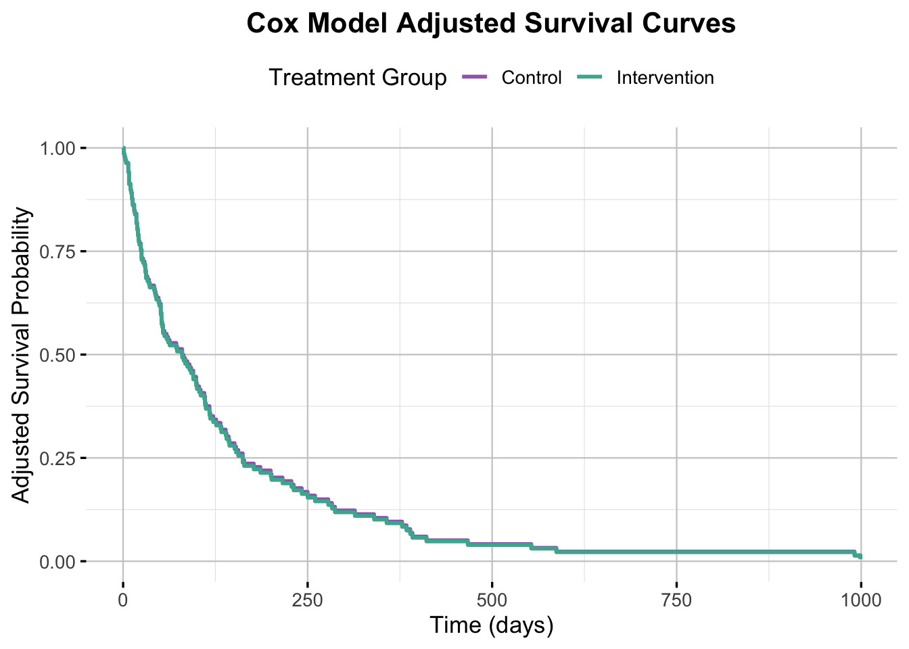
Interpretation of the Kaplan-Meier Plot
The Kaplan-Meier plot shows the survival curves for patients in the intervention and control arms. For both groups there is a steep decline in survival probability during the first 200 days, indicating rapid disease progression. The shaded areas represent the 95% confidence intervals, which largely overlap throughout the follow-up period, suggesting no significant difference in survival between treatment arms. The log-rank test yields a p-value of 0.93, providing no evidence to reject the null hypothesis of equal survival. Therefore, we conclude that there is no statistically significant difference in survival between the two chemotherapy regimens.
Interpretation of Graph Elements
X-Axis: Time (days)
The X-axis shows the time since enrollment in days. The furthest value to the right (~1000 days) marks the maximum observed survival time in the dataset. Shorter durations towards the left reflect early mortality events.
Y-Axis: Survival Probability
The Y-Axis is the Kaplan-Meier estimate of the probability that a patient survives beyond a certain timepoint. The axis starts at 1 (100% survival at time 0), and decreases with each event (death).
Curves (Blue = Standard, Orange = Test)
Each step downward represents a death. Tick marks would represent a censored individual (few in this dataset).
Shaded Area: 95% Confidence Interval
Around each curve is a shaded band indicating uncertainty in the estimate. Wider intervals to the right of the chart reflect fewer patients remaining and hence more variability in survival probability.
p = 0.93
The log-rank test result tests the null hypothesis: there is no difference in survival between the groups. The p-value of 0.93 provides strong evidence against rejecting the H0. In other words, there is no statistically significant difference in survival between the Standard and Test treatments. If the curves had diverged strongly at some point, the P-value would be lower.
“Number at Risk” Table
This shows how many participatns in each treatment group are still alive and uncensored at various timepoints (0, 250, 500, 750, 1000). As time progresses the number declines due to deaths or censoring. Few participants remain beyond 500 days, which is why the Confidence Intervals widen later in the graph.
The p-value is from a log-rank test (H₀: no difference in survival curves).
The shaded areas represent 95% confidence intervals.
The risk table shows the number of patients still at risk at each time point.
Visually, if the curves separate early and remain apart, it suggests a potential treatment effect.
3.2 Log-Rank Test
The log-rank test is a statistical test used to compare the survival distributions of two or more groups. It assesses whether there are significant differences in survival times between the groups, based on the observed and expected number of events (deaths) at each time point.
What is the Log-Rank Test?
The log-rank test is a non-parametric statistical test used to compare the survival distributions of two or more independent groups. It evaluates the null hypothesis that there is no difference in the hazard rates between the groups over time—that is, the survival curves are statistically indistinguishable.
The test works by comparing the observed number of events (e.g., deaths) in each group to the expected number of events under the assumption that all groups share the same survival function. At each time point where an event occurs, the log-rank test calculates the difference between the observed and expected events across groups, summing these differences over time to produce a test statistic.
This statistic approximately follows a chi-squared distribution, and the resulting p-value indicates whether the observed differences are likely due to chance. A small p-value (typically < 0.05) suggests a statistically significant difference in survival between groups.
In the context of Cox proportional hazards analysis, the log-rank test is often used before fitting a Cox model to determine whether a survival difference exists between categorical groups (e.g., treatment arms). While the log-rank test is limited to univariate group comparisons and assumes proportional hazards, it provides a simple and intuitive starting point for exploring potential treatment effects or group differences in survival.
Code
# Perform the log-rank testlog_rank_test <-survdiff(surv_obj ~ trt, data = veteran)log_rank_test
Call:
survdiff(formula = surv_obj ~ trt, data = veteran)
N Observed Expected (O-E)^2/E (O-E)^2/V
trt=Control 69 64 64.5 0.00388 0.00823
trt=Intervention 68 64 63.5 0.00394 0.00823
Chisq= 0 on 1 degrees of freedom, p= 0.9
Code
# Extract the p-value1-pchisq(log_rank_test$chisq, df =length(log_rank_test$n) -1)
[1] 0.9277272
Understanding Chi-Square and Degrees of Freedom
The chi-square (χ²) statistic is a measure of how much the observed data deviate from what we would expect under a specific statistical model — in this case, the assumption that survival curves are the same across groups.
In tests like the log-rank test or Cox model diagnostics, the chi-square statistic is calculated by comparing the observed vs expected number of events (deaths) for each group at every time point. The greater the deviation between these values, the larger the chi-square statistic becomes.
The degrees of freedom (df) represent the number of independent comparisons being made. For example: - If you’re comparing two groups, there’s only one degree of freedom (df = 1). - If you’re comparing k groups, df = k – 1.
Once the chi-square statistic and degrees of freedom are known, we can compute a p-value — the probability of observing such a deviation (or more extreme) if the null hypothesis were true.
Small p-value (e.g., < 0.05): Strong evidence against the null hypothesis → suggests a difference between groups.
Large p-value (e.g., > 0.05): No strong evidence → we fail to reject the null hypothesis.
In short: Chi-square quantifies the discrepancy. Degrees of freedom tell us how many comparisons we’re making. P-value tells us whether the discrepancy is statistically meaningful.
Interpretation of the Log-Rank Test Results
A log-rank test was performed to compare survival distributions between the control and intervention treatment groups. The test yielded a chi-square statistic of 0.008 with 1 degree of freedom, resulting in a p-value of 0.93. This indicates no statistically significant difference in survival between the two treatment arms. The observed and expected number of events (deaths) were nearly identical in both groups, further supporting the conclusion that survival outcomes did not differ meaningfully between treatments in this sample.
However, the log-rank test is a univariate method — it does not account for covariates that may confound or modify treatment effects (e.g., age, prior therapy). Additionally, it assumes proportional hazards and constant hazard differences over time. These limitations justify the use of a Cox proportional hazards model, which allows for multivariable adjustment and more nuanced interpretation of the treatment effect in the context of patient characteristics.
Why Continue Cox Modeling After a Non-Significant Log-Rank Test?
Even if the Kaplan-Meier curve and log-rank test show no statistically significant difference between groups, there are several valid and important reasons to continue with a Cox proportional hazards model:
The Kaplan-Meier and log-rank test are unadjusted.
They assess only one variable at a time and do not control for confounders like age, prior treatment, or performance score. A Cox model allows you to adjust for these and may reveal effects that were previously masked.
Cox regression provides more than just a p-value.
Unlike the log-rank test, the Cox model estimates hazard ratios (HRs) and their confidence intervals, which are essential for understanding the magnitude and direction of effects — even if not statistically significant.
Exploratory analysis and skill building are valuable.
In educational or preliminary research contexts, building and diagnosing models provides critical insight. You may discover interesting patterns or generate hypotheses for future studies.
Diagnostics may reveal model violations or improvements.
Even in the absence of significant treatment effects, diagnostic tools (like residual plots or proportional hazards tests) can highlight non-linear effects, time-varying hazards, or outliers that inform better modelling strategies.
Bottom line: The absence of significance in univariate survival tests does not mean “stop here.” A Cox model is not just a hypothesis test — it’s a framework for adjusted inference, deeper insight, and model-based exploration.
3.3 Why Proceed with the Cox Model?
While the Kaplan-Meier plot and log-rank test indicate no statistically significant difference in survival between treatment arms, these methods do not account for other variables that may affect outcomes. The Cox proportional hazards model allows us to:
Adjust for confounding covariates (e.g., age, prior treatment)
Estimate hazard ratios for each variable
Explore possible interactions or time-varying effects
Thus, we proceed with a Cox model to assess whether treatment effects become more apparent after adjusting for relevant clinical factors.
4 Cox Regression Models
The Cox proportional hazards model is a regression method for analysing time-to-event data. Unlike the Kaplan-Meier estimator, which provides a non-parametric, unadjusted view of survival, the Cox model allows us to examine the effect of multiple covariates on the hazard of death.
This model assumes that covariates have a multiplicative and time-constant effect on the hazard (the proportional hazards assumption). By estimating hazard ratios, we can assess whether factors such as treatment type, age, or prior therapy are independently associated with better or worse survival outcomes.
We begin with a simple model including only treatment group, and progressively build toward a multivariable model incorporating continuous and categorical variables. Each model is followed by diagnostic checks to assess assumptions and guide model refinement.
Understanding the Cox Proportional Hazards Model
The Cox proportional hazards model (often just called the Cox model) is a cornerstone of survival analysis, allowing us to investigate how multiple variables influence the risk (hazard) of an event over time — without needing to specify the baseline hazard function.
What is a Hazard?
The hazard is the instantaneous risk of the event (e.g., death) at a given time, given that the individual has survived up to that point. The Cox model expresses this as:
h(t | X) = h₀(t) × exp(β₁X₁ + β₂X₂ + … + βₖXₖ)
Where: - h(t | X) is the hazard at time t for a subject with covariates X, - h₀(t) is the baseline hazard (unspecified), - β are the coefficients estimating the effect of each covariate.
Why Use the Cox Model Instead of Kaplan-Meier?
Kaplan-Meier
Cox Model
Non-parametric (no assumptions)
Semi-parametric (assumes proportional hazards)
Describes survival by groups only
Models the effect of variables
Great for initial exploration
Great for inference and prediction
Can’t adjust for confounders
Can include multiple covariates
Visual tool
Inferential and predictive tool
In practice, it’s common to start with a Kaplan-Meier plot to visualize survival, then use a Cox model to quantify the effect of predictors and control for confounding.
What Does “Proportional Hazards” Mean?
The Cox model assumes that the hazard ratio between two individuals is constant over time.
For example, if a treatment reduces the hazard by 30%, it is assumed to reduce it by 30% at every point in time. This is the proportional hazards assumption, and it must be checked using diagnostic tools like Schoenfeld residuals.
What the Model Produces:
- Coefficients (β): Log hazard ratios - exp(β): Hazard ratios (HR), easier to interpret - p-values: From the Wald test, testing whether β ≠ 0 - Global tests: Likelihood ratio, Score (logrank), Wald
Summary:
The Cox model is a flexible, interpretable, and robust way to analyze the effect of variables on survival, especially when you want to adjust for multiple covariates. However, it does require checking assumptions and being thoughtful about variable selection and transformations (e.g., linearity for continuous variables).
4.1 Univariable Models
In this section, we fit a series of univariable Cox models to assess the effect of individual covariates on survival. This step helps us explore the independent contribution of each variable before building more complex multivariable models.
4.1.1 Treatment Group Only
We begin with a univariable Cox model that includes only the treatment variable (trt). This allows us to assess the effect of treatment on survival without adjusting for any other covariates.
Code
# Fit the Cox Proportional Hazards modelcox_model <-coxph(surv_obj ~ trt, data = veteran) # Where trt is a binary treatment variable with levels Control and Intervention# Summarize the modelsummary(cox_model)
Call:
coxph(formula = surv_obj ~ trt, data = veteran)
n= 137, number of events= 128
coef exp(coef) se(coef) z Pr(>|z|)
trtIntervention 0.01774 1.01790 0.18066 0.098 0.922
exp(coef) exp(-coef) lower .95 upper .95
trtIntervention 1.018 0.9824 0.7144 1.45
Concordance= 0.525 (se = 0.026 )
Likelihood ratio test= 0.01 on 1 df, p=0.9
Wald test = 0.01 on 1 df, p=0.9
Score (logrank) test = 0.01 on 1 df, p=0.9
Interpretation of Cox Table
Term
Value
What It Means
coef
0.01774
This is the log hazard ratio (log(HR)) comparing the Intervention group to Control. Close to 0 means almost no effect.
exp(coef)
1.01790
This is the hazard ratio (HR). A value of 1.018 means the hazard (risk of death) is 1.8% higher in the Intervention group compared to Control. However at this level the value is insigificant.
se(coef)
0.18066
The standard error. This gives us the variability around the estimate.
z
0.098
The Wald test statistic. The low value implies no stastical significange.
p-value
0.922
Far above the conventional 0.05 threshold. This is very strong evidence against any meaningful treatment effect.
95% CI
(0.7144, 1.45)
Wide confidence interval, spanning both below and above 1—so we can’t rule out either harm or benefit.
Concordance The C-index, or concordance statistic is the probability that a candomly hosen subject who died earlier had a higher predicted risk. At 0.525 it is random chance, suggested poor predictive power.
Interpretation of the Cox Model Results
The univariable Cox proportional hazards model found no statistically significant difference in survival between the control and intervention groups (HR = 1.02, 95% CI: 0.71–1.45, p = 0.92). The hazard ratio near 1 suggests little to no effect of the treatment on mortality risk. The wide confidence interval spans both potential benefit and harm, highlighting uncertainty in the estimate. The concordance statistic (0.525) indicates the model’s discriminative ability is only marginally better than chance. Overall, this analysis offers no evidence that the intervention improves survival in this sample.
Code
# Use ggadjustedcurves for plotting adjusted survival curves directly from the Cox modelggadjustedcurves( cox_model, # The fitted Cox modeldata = veteran, # The original data used to fit the modelvariable ="trt", # The variable to plot adjusted curves formethod ="average", # Method for adjusting (average effect of other covariates)conf.int =TRUE,legend.labs =c("Control", "Intervention"),legend.title ="Treatment Group",risk.table =TRUE, # Include the risk tablerisk.table.title ="Number at Risk",xlab ="Time (days)",ylab ="Adjusted Survival Probability",title ="Cox Model Adjusted Survival Curves",palette =c("#A569BD", "#45B39D"),ggtheme =theme_minimal(base_size =13) +theme(legend.position ="top",plot.title =element_text(hjust =0.5, face ="bold"),panel.grid.major =element_line(color ="grey80", linewidth =0.4),panel.grid.minor =element_line(color ="grey90", linewidth =0.2) ),tables.theme =theme(axis.text.y =element_text(size =10, margin =margin(r =12), lineheight =2) ))
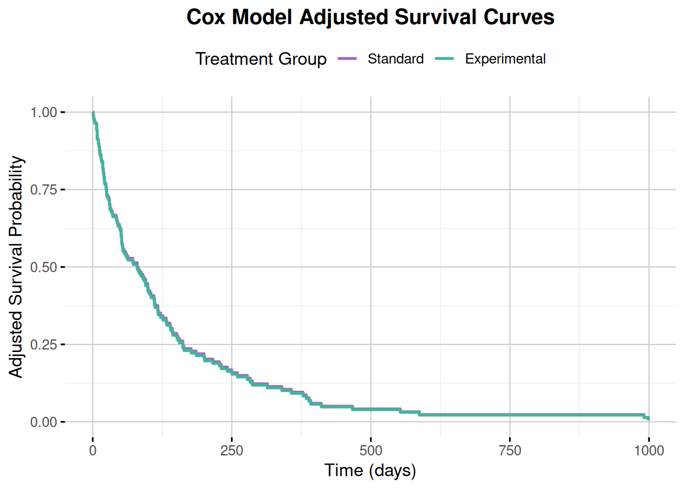
Why use ggadjustedcurves() for this plot
For plotting survival curves adjusted for covariates from a Cox Proportional Hazards model, the ggadjustedcurves() function from the survminer package offers one of the most direct and statistically appropriate approaches—particularly as model complexity increases.
Statistical validity: ggadjustedcurves() uses the fitted cox_model to compute adjusted survival probabilities for the variable of interest (in this case, trt). When method = “average” is specified (the default when covariates are present), it returns marginal estimates—appropriate for interpreting average treatment effects across the population. In our simpler model (~ trt), it effectively plots the model-predicted survival curve for each treatment group.
Robustness: This function is purpose-built for adjusted curve plotting and avoids many of the pitfalls seen with manually passing newdata to survfit() and plotting with ggsurvplot(), such as misaligned strata or legend issues. It correctly associates the model, the data, and the plot elements, including the risk table.
Simplicity: It eliminates the need for manually constructing a new_trt data frame or calling survfit() separately, resulting in cleaner, more reproducible code—particularly useful in collaborative or long-term projects.
Interpretation of the Adjusted Survival Curves
The Cox-adjusted survival curves for the Control and Intervention groups are nearly identical, indicating no meaningful difference in predicted survival probabilities between the treatment arms. This visual overlap aligns with the Cox model’s hazard ratio, which was close to 1 and not statistically significant. Together, the model output and adjusted curves reinforce the conclusion that the intervention had no observable effect on survival in this cohort.
Why do the lines overlap?
The survival curves for the Control and Intervention groups overlap almost entirely in this plot. This is because the Cox proportional hazards model found no significant difference between the two groups in terms of survival (hazard ratio ≈ 1, p = 0.922). As a result, the model-predicted curves are nearly identical. The faint visibility of the Control group line is due to it being directly behind the Intervention group line.
Model Diagnostics
Before interpreting the results of a Cox proportional hazards model, it’s important to ensure that the model’s assumptions are met. The two key assumptions are:
The proportional hazards (PH) assumption: The effect of each covariate on the hazard is constant over time.
Linearity of continuous covariates: Continuous covariates are assumed to have a linear relationship with the log hazard.
Violations of these assumptions can undermine the model’s predictive utility and lead to misleading conclusions.
In this section, we use the following diagnostic tools to assess model adequacy:
Schoenfeld residuals to test the PH assumption.
Martingale residuals to check for non-linearity and outliers.
Functional form checks, particularly for continuous covariates like age.
Where needed, we apply transformations (e.g., natural splines) to better capture nonlinear effects.
These checks help ensure that the model remains a sound and interpretable framework for estimating covariate effects on survival.
Checking the Proportional Hazards Assumption
A central assumption of the Cox proportional hazards model is that hazard ratios remain constant over time — meaning the relative risk between any two individuals does not change as time progresses. This is known as the proportional hazards (PH) assumption, and verifying it is crucial before interpreting model results.
Schoenfeld Residuals
To assess the PH assumption, we use Schoenfeld residuals, which evaluate whether covariate effects vary over time. If residuals show a systematic pattern against time, it may indicate a violation of the assumption.
We check this in two ways:
Statistical tests: The cox.zph() function provides both a global test and tests for each covariate. A p-value < 0.05 suggests evidence against the PH assumption.
Visual inspection: Plots of scaled Schoenfeld residuals include a smoothed line and 95% confidence bands. Systematic trends or large deviations from zero may indicate time-varying effects.
If either test indicates a violation, we may need to adjust the model using time-varying covariates, stratification, or alternative approaches.
Code
# Test the PH assumptioncox.zph(cox_model)
chisq df p
trt 3.54 1 0.06
GLOBAL 3.54 1 0.06
Understanding Chi-Squared and p-values in PH Assumption Testing
When checking the proportional hazards (PH) assumption in a Cox model using cox.zph(), each covariate — and the model as a whole — is tested for time-dependent effects.
Chi-squared statistic: Measures how much the residuals deviate from what would be expected if the covariate had a constant effect over time (i.e., proportional hazards). A larger value suggests a stronger departure from proportionality.
Degrees of freedom (df): Typically 1 for individual covariates, and equal to the number of covariates in the global test.
p-value: Quantifies the probability that the observed chi-squared value (or more extreme) could occur by chance if the PH assumption holds.
How to interpret: - p > 0.05: No significant evidence of time-varying effects — PH assumption likely holds. - p < 0.05: Suggests the effect of the covariate may change over time — a potential violation of the PH assumption.
Use both statistical tests and residual plots for a more robust assessment. A borderline p-value (e.g., 0.06) should be interpreted with caution and always viewed in conjunction with the corresponding plot.
Interpretation of PH Assumption Test (Schoenfeld residuals)
trt p = 0.06: Slightly above the conventional 0.05 threshold. This suggests no strong evidence that the effect of treatment changes over time.
GLOBAL p = 0.06: The overall model does not show a statistically significant violation of the PH assumption.
Conclusion: We do not reject the PH assumption based on either the individual or global tests. The model is likely appropriate for interpretation without time-dependent adjustments.
Schoenfeld Residuals Plot
Code
plot(cox.zph(cox_model))
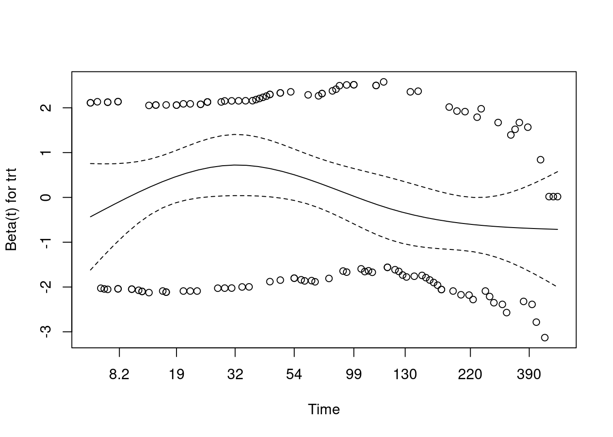
What the Visual Diagnostic Shows
The y-axis: Scaled Schoenfeld residuals for trt. If the proportional hazards assumption holds, these residuals should fluctuate randomly around zero.
The x-axis: Time (or transformed time).
The line: A smoothed spline fit (typically a loess curve) showing the trend of residuals over time.
The confidence band: Helps you assess whether the trend significantly deviates from horizontal (i.e., no time-dependent effect).
A flat line (slope ≈ 0): Suggests the hazard ratio for trt does not change over time — good!
A wavy or sloped line: Suggests potential violation of the proportional hazards assumption — this would back up a significant p-value.
x-axis (Time): Time since baseline (likely in days, from your dataset).
y-axis (Beta(t) for trt): Time-varying estimate of the log hazard ratio for the treatment group (trt), based on Schoenfeld residuals.
The solid black line: A smoothed curve showing how the estimated coefficient for trt might change over time.
Dashed lines: Approximate 95% confidence bands around that smoothed estimate.
Open circles: Residuals for each individual event — they don’t need to follow a pattern, but their distribution can hint at model fit.
If the solid line is roughly flat and within the dashed lines, the effect of treatment does not change with time, and the PH assumption is reasonably upheld.
If the solid line drifts noticeably over time, or wanders outside the dashed lines, that’s evidence that the treatment effect may change — a violation of the PH assumption.
In our case, the line is gently curved, but still well within the dashed boundaries. There’s no strong time trend — the log hazard ratio is hovering around zero and doesn’t appear to increase or decrease dramatically.
Schoenfeld Residuals Interpretation
The global test for proportional hazards yielded a p-value of 0.06, slightly above the conventional 0.05 threshold, suggesting no strong evidence of a violation. The smoothed plot of Schoenfeld residuals for the treatment variable shows mild curvature but remains well within the 95% confidence bands, with no clear time-dependent trend. Together, these results support the proportional hazards assumption for treatment and the suitability of the Cox model in this context.
Martingale Residuals (for Functional Form of Covariates)
Martingale residuals are used to evaluate whether continuous covariates have been correctly specified in the Cox model. By plotting these residuals against each covariate, we can detect departures from linearity on the log-hazard scale. Systematic patterns, such as curvature or clustering, may indicate the need for transformations (e.g., splines or categorization) to better capture the relationship.
Understanding Martingale Residuals
Martingale residuals are used to assess whether the functional form of a continuous covariate is correctly specified in a Cox proportional hazards model.
What are they?
Martingale residuals represent the difference between the observed number of events and the expected number of events under the fitted model for each subject.
They range from –∞ to +1 and are asymmetrically distributed.
Why do we use them?
To check the linearity assumption: the Cox model assumes that the covariate has a linear effect on the log hazard. If this is not true (e.g. the effect increases or decreases non-linearly), the model may misestimate risk.
What should you look for in the plot?
You typically plot Martingale residuals against a continuous covariate (e.g. age). Then:
A random scatter around the horizontal line at 0 suggests linearity is reasonable.
A systematic curve (e.g., U-shaped, S-shaped) suggests non-linearity and the need for transformations (e.g., log(age), age², splines).
Practical Tip:
Martingale residuals are not symmetric, so smooth trends can be hard to detect visually. It’s a good idea to pair this check with ggcoxfunctional() or use splines to model nonlinear effects more flexibly.
Code
# Generate Martingale residualsmartingale_resid <-residuals(cox_model, type ="martingale")# Add residuals to your dataveteran$martingale <- martingale_resid# Plot residuals against a continuous covariate (e.g., time or another variable)# Here we plot against the linear predictor for simplicityveteran$linear_pred <-predict(cox_model, type ="lp")ggplot(veteran, aes(x = linear_pred, y = martingale, color = trt)) +geom_point(alpha =0.6) +geom_hline(yintercept =0, linetype ="dashed", color ="grey30") +theme_minimal(base_size =13) +labs(title ="Martingale Residuals vs Linear Predictor",x ="Linear Predictor (Log Hazard)",y ="Martingale Residual",color ="Treatment Group" ) +scale_color_manual(values =c("Control"="#A569BD", "Intervention"="#45B39D")) +theme(plot.title =element_text(hjust =0.5, face ="bold"))
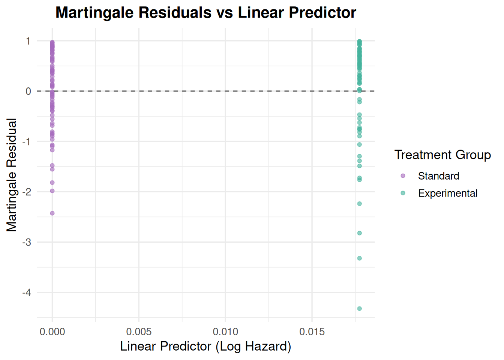
What do the Martingale Residuals Show
Martingale residuals help us check whether the variables in our Cox model are specified correctly — particularly useful for continuous covariates. However, when the variable in question is binary (like our treatment group: Control vs Intervention), the Martingale residual plot will display two vertical stacks of points — one for each group.
In the plot above:
The x-axis represents the linear predictor (log hazard). Because the treatment is binary, there are only two unique predictor values: one for the control group and one for the intervention group.
The y-axis shows the Martingale residuals for each individual.
The dashed horizontal line at 0 acts as a visual guide to see if residuals are randomly scattered above and below it.
We want to see: - No clear patterns or trends in the residuals, - A reasonably symmetric spread around zero in each group, - No outliers clustering far from the bulk of points.
In this case, both groups show a spread of residuals centered roughly around zero, with no curvature or skew that would suggest model misspecification. That’s a good sign — the model’s structure seems to handle the treatment variable well, and there’s no obvious reason to suspect we need to transform it or add interaction terms.
Interpretation of Martingale Residuals Plot
The Martingale residual plot helps assess whether the model’s assumptions—particularly the functional form of covariates—are valid.
In this case, residuals were plotted against the linear predictor for a binary treatment variable. As expected, two vertical bands appear, corresponding to the Control and Intervention groups. The residuals are roughly symmetric around zero within each group, with no obvious curvature or systematic pattern. This supports the adequacy of the treatment variable’s specification in the model and suggests that no transformation is needed for this binary covariate.
Why we haven’t checked the functional form of covariates
The Cox model assumes a linear relationship between continuous covariates and the log hazard. In our current model, only the treatment group (trt) is included, which is a categorical variable.
If we were to build a more complex model including continuous predictors like age, Karnofsky score (karno), or time since diagnosis (diagtime), we would need to assess whether their relationship with the log hazard is truly linear. This is typically done by plotting Martingale residuals or using ggcoxfunctional().
For now, since our model does not include continuous covariates, this step is not necessary — but it’s an important part of model diagnostics when expanding our analysis.
Additional Covariates
To improve the model and better account for variability in survival outcomes, we now include additional patient characteristics: age (a continuous variable) and prior treatment history (prior, a binary variable). Adding these covariates allows us to control for baseline differences between patients, assess their independent associations with survival, and explore whether they influence the effect of treatment.
Why Add Covariates to a Cox Model?
Including additional covariates in a Cox proportional hazards model serves several purposes:
Control for confounding: Variables such as age or prior treatment may influence both the outcome and the likelihood of receiving a particular treatment. Adjusting for them helps isolate the effect of the treatment itself.
Improve model accuracy: Predictive covariates enhance the model’s explanatory power and reduce residual variation.
Estimate independent effects: Including multiple variables allows us to assess their individual contributions to survival outcomes, independent of each other.
Explore effect modification: With covariates in the model, we can investigate interactions — for example, whether the effect of treatment varies by age or prior therapy.
When selecting covariates, decisions should be guided by clinical relevance and theoretical grounding, not just statistical significance.
4.2 Multivariable Models
To build on the univariable analysis of treatment effects, we next fit a multivariable Cox proportional hazards model that incorporates additional patient-level covariates. This allows us to estimate the effect of treatment on survival while adjusting for other potential prognostic factors, such as age and prior treatment history. By doing so, we account for potential confounding and improve the model’s explanatory power.
What is a multivariable Cox model and why are we using it?
In a univariable Cox model, we examine the effect of one predictor at a time on the hazard of an event (e.g., death). While this can be useful for preliminary exploration, it doesn’t account for the influence of other variables that might confound or modify the relationship.
A multivariable Cox proportional hazards model includes multiple covariates simultaneously. This allows us to: - Estimate the adjusted effect of each variable while controlling for the others, - Improve model accuracy and interpretability, - Detect whether the apparent effect of one variable (e.g., treatment) persists after adjusting for others (e.g., age, comorbidities), - Explore potential interactions or effect modification.
In this section, we’ll first add a continuous covariate (age) and then a binary variable (prior treatment) to the model. We’ll also assess whether the functional form of continuous variables is appropriate and ensure that model assumptions still hold.
Why not use logistic regression?
Logistic regression ignores time-to-event and censoring. When working with survival data, Cox models are preferred as they preserve the time structure and allow for censored cases.
4.2.1 Continuous Variable: Age
Age is a clinically relevant factor that may influence survival outcomes in lung cancer. In this section, we assess whether age is independently associated with survival time and verify that its relationship with the log hazard is appropriately linear.
Modeling Continuous Covariates
Unlike categorical variables, continuous predictors like age require us to check their functional form in the model. The Cox model assumes a linear relationship between the covariate and the log hazard — meaning each 1-year increase in age is assumed to have the same proportional effect on the hazard.
If this assumption doesn’t hold (e.g., if risk increases faster at older ages), we may need to use transformations or splines to accurately model the relationship.
We’ll start by fitting a Cox model including age and then assess the functional form using Martingale residuals.
Cox Model with Age
Code
cox_age <-coxph(Surv(time, status) ~ trt + age, data = veteran)summary(cox_age)
Call:
coxph(formula = Surv(time, status) ~ trt + age, data = veteran)
n= 137, number of events= 128
coef exp(coef) se(coef) z Pr(>|z|)
trtIntervention -0.003654 0.996352 0.182514 -0.020 0.984
age 0.007527 1.007556 0.009661 0.779 0.436
exp(coef) exp(-coef) lower .95 upper .95
trtIntervention 0.9964 1.0037 0.6967 1.425
age 1.0076 0.9925 0.9887 1.027
Concordance= 0.514 (se = 0.029 )
Likelihood ratio test= 0.63 on 2 df, p=0.7
Wald test = 0.62 on 2 df, p=0.7
Score (logrank) test = 0.62 on 2 df, p=0.7
Interpretation of the Cox Model with Age
A Cox proportional hazards model was fitted to examine the relationship between survival time and two predictors: treatment group (trt) and patient age (age). The model included 137 patients, with 128 events (deaths).
The hazard ratio for the intervention group was 0.996 (95% CI: 0.697 – 1.425; p = 0.984), suggesting virtually no difference in hazard compared to the control group after adjusting for age. This effect was not statistically significant.
For age, the hazard ratio was 1.008 (95% CI: 0.989 – 1.027; p = 0.436), indicating that each additional year of age was associated with a 0.8% increase in the hazard of death. However, this association was also not statistically significant and the confidence interval included 1, suggesting uncertainty about the true effect.
Overall, the model’s ability to discriminate between patients with longer vs shorter survival times was weak, with a concordance index of 0.514 (where 0.5 = random chance). The global model statistics — including the likelihood ratio test, Wald test, and score test — were all non-significant (p = 0.7), indicating that neither variable added substantial predictive value to the model.
There is no evidence of a treatment effect after adjusting for age.
Age may have a small effect, but in this sample, it is not statistically or clinically meaningful.
The overall model performs poorly in predicting survival in this dataset.
Interpreting the Cox Model Output
Understanding the coxph() output is essential for interpreting survival models. Here’s a breakdown of the most common components you’ll encounter in both univariable and multivariable Cox regressions:
🔹 coef
This is the log hazard ratio — the raw estimate from the model. It represents the change in the log hazard of the event (e.g., death) associated with a one-unit increase in the covariate (for continuous variables) or relative to a reference group (for categorical variables).
🧠 Note: Log hazards are difficult to interpret directly, so we usually exponentiate them.
🔹 exp(coef)
This is the hazard ratio (HR) — the exponentiated coef, which expresses effect size more intuitively.
exp(coef) > 1 → Increased hazard
exp(coef) < 1 → Decreased hazard
exp(coef) = 1 → No effect
🔎 Example: exp(coef) = 1.20 means a 20% higher hazard. exp(coef) = 0.80 means a 20% lower hazard.
🔹 se(coef)
The standard error of the coefficient — reflects how much uncertainty surrounds the estimate.
Smaller values = more precise estimates
Larger values = more uncertainty (due to small samples or noisy data)
🔹 z and Pr(>|z|)
- z is the Z-statistic, calculated as coef / se(coef)
- Pr(>|z|) is the p-value from the Wald test for each coefficient
This tests the null hypothesis that the covariate has no effect (coef = 0).
p < 0.05 → Statistically significant
p > 0.05 → Not statistically significant
📊 Model-Level Statistics
🔸 Concordance
- Measures the model’s ability to correctly rank survival times (similar to AUC for classification)
- Ranges from 0.5 (random) to 1.0 (perfect)
- In clinical data, values of 0.6–0.75 are typical
🔸 Likelihood Ratio Test
- Compares the full model to a null (intercept-only) model
- Tests overall model fit
- p < 0.05 = your model significantly improves fit
🔸 Wald Test
- Aggregates the individual Wald tests across all covariates
- Tests whether any coefficients differ significantly from 0
🔸 Score (Logrank) Test
- Rank-based test comparing observed vs expected survival
- Can be slightly more sensitive in small samples
- Often used as an overall model check
✅ In practice: Use all three global tests and the concordance to evaluate how well the model explains variation in survival. If all are non-significant, the model may lack predictive utility.
Schoenfeld Residuals for Age
Code
# Test proportional hazards assumption for the model including agecox_zph_age <-cox.zph(cox_age)print(cox_zph_age)
chisq df p
trt 3.67 1 0.055
age 1.68 1 0.195
GLOBAL 6.20 2 0.045
Proportional hazards were tested using Schoenfeld residuals. The assumption was met for age (p = 0.195) but marginally violated for treatment group (p = 0.055), which is slightly below the conventional threshold of 0.05. The global test for the model (p = 0.045) was also just below 0.05, indicating a possible overall violation of the proportional hazards assumption.
While these results do not strongly indicate a breakdown of the PH assumption, the borderline p-values warrant caution. A visual inspection of the residual plots (plot(cox.zph())) can help determine whether the trend is substantial or random variation.
Interpreting Schoenfeld Residuals
Schoenfeld residuals are used to test the Proportional Hazards (PH) assumption in Cox models — that the effect of each covariate remains constant over time.
How to interpret the output:
Each row (e.g., trt, age) gives a test of proportionality for that specific variable.
The GLOBAL row tests all covariates together.
What the numbers mean:
chisq is the test statistic (larger values = more evidence of time-varying effects).
p is the p-value testing null hypothesis: proportional hazards holds.
Rule of thumb: - p < 0.05 → PH assumption violated (bad) - p > 0.05 → PH assumption holds (good)
🧠 Note: Slight violations (e.g., p = 0.055) might not be a problem in practice — but major ones (e.g., p = 0.01) should be addressed.
Code
# Visual checkplot(cox_zph_age)
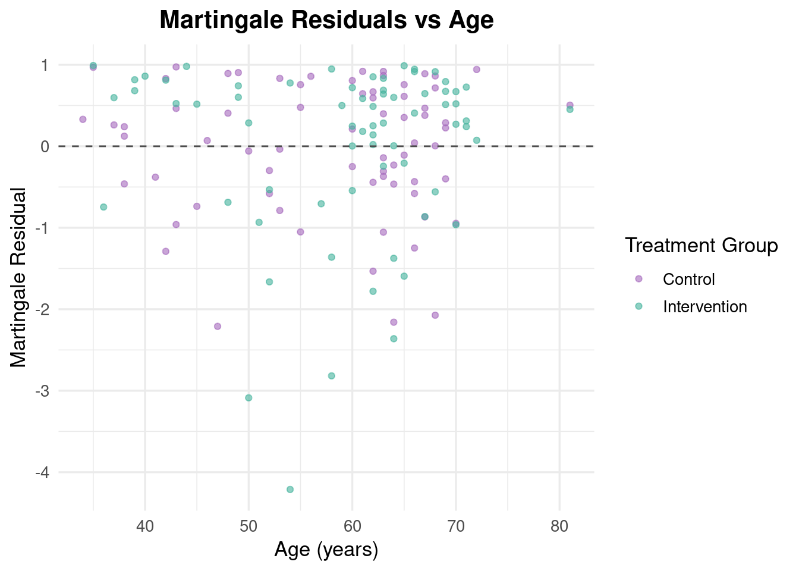
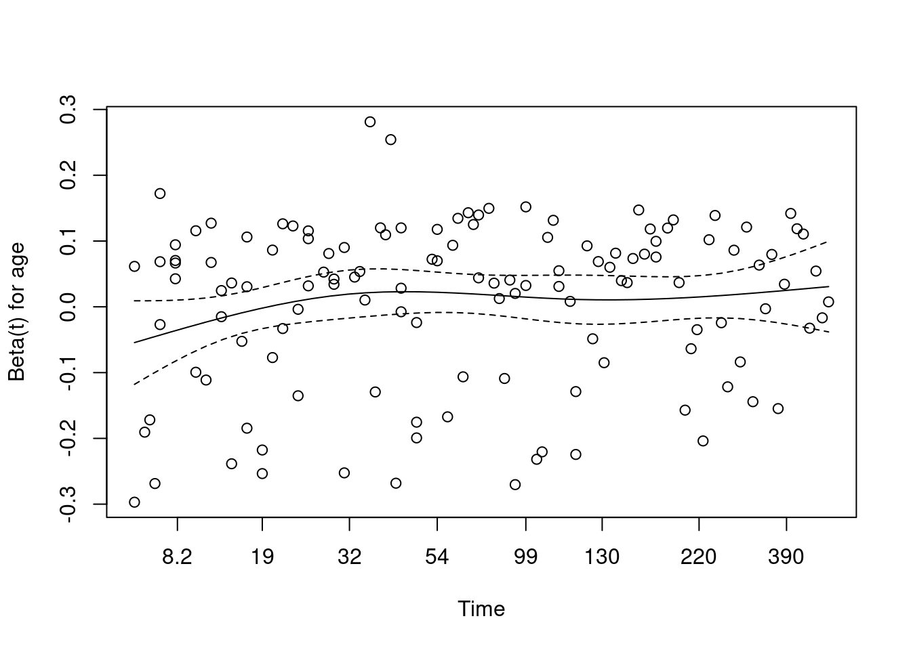
The Schoenfeld residual plot for age, derived from the multivariable Cox model, reveals no strong evidence of violation of the proportional hazards assumption. The smoothed coefficient curve remains relatively flat across time, with the 95% confidence band consistently overlapping zero. This suggests that the effect of age on the hazard function does not meaningfully vary with time. This visual impression aligns with the result from the formal statistical test (χ² = 1.68, df = 1, p = 0.195), providing no significant indication that the proportional hazards assumption has been violated for age in this model.
How to Interpret Schoenfeld Residual Plots
This plot checks the Proportional Hazards (PH) assumption visually for a covariate (e.g., age).
What we are seeing:
X-axis: Time
Y-axis: Estimated effect (beta) of the covariate at each time point
Dots: Residuals at each event time
Solid line: Smoothed trend of the coefficient over time
Dashed lines: 95% confidence interval of that trend
What we want to see:
✅ A flat line near zero, with the confidence band containing zero throughout time → suggests PH assumption holds.
⚠️ A wavy trend or curve drifting far from zero → suggests non-proportional hazards (i.e., the effect of the covariate changes over time).
Interpreting the plot:
If the smoothed line is approximately flat and the confidence interval consistently includes zero — with no strong patterns or directional trends — then the PH assumption is likely satisfied for that covariate.
Martingale Residuals for Age to Assess Functional Form
To assess whether age is appropriately modeled as a linear predictor in the Cox model, we examine Martingale residuals plotted against age to detect non-linearity in its functional form.
Code
# Generate Martingale residualsveteran$martingale_age <-residuals(cox_age, type ="martingale")# Generate linear predictorveteran$linear_pred_age <-predict(cox_age, type ="lp")# Plot residuals against ageggplot(veteran, aes(x = age, y = martingale_age, color = trt)) +geom_point(alpha =0.6) +geom_hline(yintercept =0, linetype ="dashed", color ="grey30") +theme_minimal(base_size =13) +labs(title ="Martingale Residuals vs Age",x ="Age (years)",y ="Martingale Residual",color ="Treatment Group" ) +scale_color_manual(values =c("Control"="#A569BD", "Intervention"="#45B39D")) +theme(plot.title =element_text(hjust =0.5, face ="bold"))
Martingale residuals plotted against age showed no clear non-linear trend, with residuals generally scattered randomly across the range of age values. This suggests that modeling age as a linear term in the Cox model is reasonable. There is no strong evidence to support the need for transformations or spline-based modeling of age in this dataset.
How to Interpret Martingale Residuals for Functional Form
This plot helps assess whether the relationship between a continuous variable (like age) and the log hazard is linear, which is a core assumption of the Cox model.
X-axis: The covariate
Y-axis: Martingale residuals (bounded between -∞ and 1)
Points: One per individual, representing how well their survival time is predicted
Dashed line at 0: Reference line to help spot patterns
What to look for: - A random scatter of points across the X-axis with no clear curve → linearity assumption is likely satisfied ✅ - A systematic curve, bend, or wave → suggests the effect of age might be non-linear ⚠️
In that case, consider modeling age using splines or transformations (e.g., log() or ^2).
Important: These residuals are noisier near their bounds and should be interpreted cautiously, especially when sample size is limited.
Functional Form Check
Code
# Fit a univariable Cox model to assess functional form of agecox_age_only <-coxph(Surv(time, status) ~ age, data = veteran)# Check the functional form visually using Martingale residualsggcoxfunctional(cox_age_only, data = veteran)
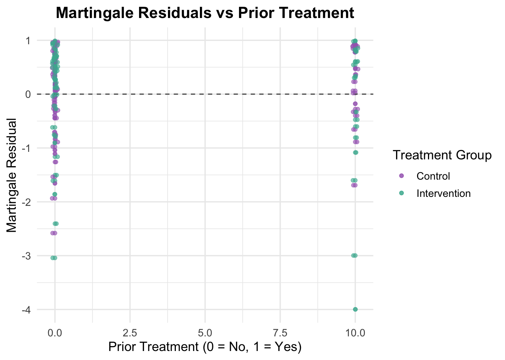
Assessing Functional Form with Martingale Residuals
What this plot shows:
This diagnostic visualizes whether a continuous covariate (e.g., age) has a linear relationship with the log hazard, as assumed by the Cox model.
X-axis:
The values of the continuous variable being assessed (e.g., age)
Y-axis:
The Martingale residuals from a null Cox model (i.e., a model with no covariates)
Dots:
Each dot represents one observation
Smooth black line:
A non-parametric smoother that helps reveal trends in the residuals — this is the key to checking the shape of the relationship
How to interpret it:
✅ If the black line is roughly straight and flat, this suggests a linear relationship between the variable and the log hazard — which is what the Cox model assumes.
⚠️ If the line shows a curved or non-linear pattern, this suggests the variable may not be appropriately modeled with a simple linear term.
This can indicate the need to use transformations (e.g., log(age), age^2) or splines.
Tip:
Small wobbles are not a major concern — we are primarily looking for clear trends, not minor bumps. Major U-shapes, inflections, or long curves are the most concerning signs.
The functional form check using Martingale residuals and a non-parametric smoother suggests that age may not have a strictly linear relationship with the log hazard. The smooth curve appears U-shaped, implying that risk may not increase evenly with age across the full range. This indicates that the assumption of linearity may be violated, and that alternative modeling strategies (e.g., polynomial terms or splines) could improve model fit.
While the Martingale residual plot suggests that the relationship between age and the log hazard may not be strictly linear, age was not statistically significant in the model. As such, no transformation or spline was applied. This could be revisited in future modeling if age becomes more influential.
4.2.2 Binary Variable: Prior Treatment
We now evaluate the variable prior, which indicates whether a patient received prior therapy before enrolment in the study. This binary variable may capture important differences in disease severity, treatment history, or prognosis that could influence survival outcomes.
Why test binary covariates like ‘prior’?
Even though prior is binary, its inclusion allows us to control for historical differences in patient treatment, which may affect survival independently of the trial treatment (trt).
For binary variables, we don’t need to assess the functional form, but we do need to check the proportional hazards assumption (as with any covariate in the Cox model). We’ll interpret the hazard ratio as the relative difference in risk between those who received prior therapy and those who did not.
Fit Cox Model with Prior Treatment
Code
# Fit the Cox model including prior treatmentcox_prior <-coxph(Surv(time, status) ~ trt + prior, data = veteran)summary(cox_prior)
Call:
coxph(formula = Surv(time, status) ~ trt + prior, data = veteran)
n= 137, number of events= 128
coef exp(coef) se(coef) z Pr(>|z|)
trtIntervention 0.02608 1.02643 0.18099 0.144 0.885
prior -0.01447 0.98563 0.02009 -0.720 0.471
exp(coef) exp(-coef) lower .95 upper .95
trtIntervention 1.0264 0.9743 0.7199 1.463
prior 0.9856 1.0146 0.9476 1.025
Concordance= 0.517 (se = 0.03 )
Likelihood ratio test= 0.54 on 2 df, p=0.8
Wald test = 0.53 on 2 df, p=0.8
Score (logrank) test = 0.53 on 2 df, p=0.8
A Cox proportional hazards model was fitted to evaluate the association between survival and two predictors: treatment group (trt) and prior therapy (prior). The model was based on 137 patients, with 128 observed events.
The hazard ratio for the intervention group was 1.03 (95% CI: 0.72 – 1.46, p = 0.885), indicating no evidence of a treatment effect after adjusting for prior therapy. Similarly, prior therapy was not associated with survival, with a hazard ratio of 0.99 (95% CI: 0.95 – 1.03, p = 0.471).
Model discrimination was weak, with a concordance of 0.517, suggesting the model has limited ability to rank survival times accurately. Global model fit tests (likelihood ratio, Wald, and score) were all non-significant (p = 0.8), indicating that the included variables do not significantly improve model performance.
Neither treatment assignment nor prior therapy appear to be meaningful predictors of survival in this dataset. There is no evidence of an additive effect between these covariates.
Schoenfeld Residuals for Prior Treatment
Code
# Test proportional hazards assumption for the model including prior treatmentcox_zph_prior <-cox.zph(cox_prior)print(cox_zph_prior)
chisq df p
trt 3.38 1 0.066
prior 3.04 1 0.081
GLOBAL 6.06 2 0.048
Proportional hazards were assessed using Schoenfeld residuals for the model including treatment group and prior therapy. The global test was statistically significant (p = 0.048), suggesting potential violation of the proportional hazards assumption overall.
Individually, both treatment (p = 0.066) and prior therapy (p = 0.081) had p-values slightly above the conventional 0.05 threshold, indicating borderline evidence of non-proportionality. These results do not strongly confirm a violation, but they do warrant cautious interpretation.
Given the marginal nature of these findings, visual inspection of the Schoenfeld residual plots is recommended to assess whether any systematic time-varying effects are present.
Code
# Visual checkplot(cox_zph_prior)
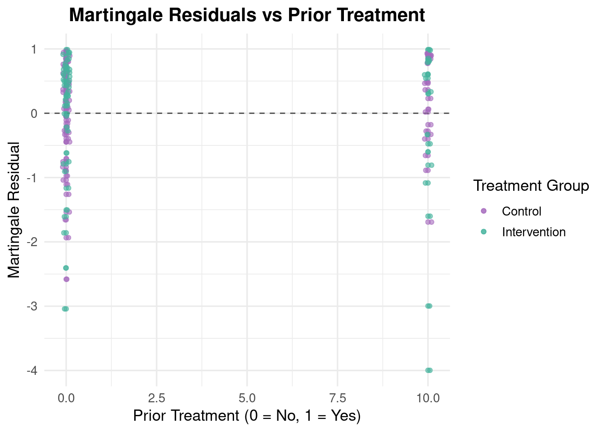
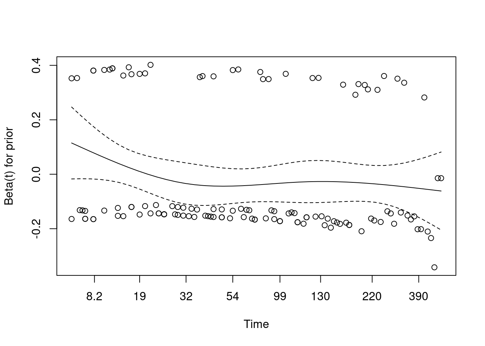
The Schoenfeld residual plot for prior treatment shows a smoothed line that remains approximately flat over time, with the 95% confidence band consistently including zero. This suggests that the effect of prior treatment on the hazard is stable across the follow-up period, and supports the assumption of proportional hazards for this variable.
In contrast, the plot for treatment group (trt) exhibits a noticeable wavy pattern in the smoothed line, particularly in the early to mid-study period. While the confidence bands still broadly include zero, the shape of the curve raises some concern about potential time-varying effects. Combined with a borderline p-value from the cox.zph() test (p = 0.060), this suggests the proportional hazards assumption for trt is not clearly violated, but may warrant caution and further consideration—especially in more complex models.
Martingale Residuals for Prior Treatment
Code
# Generate Martingale residualsveteran$martingale_prior <-residuals(cox_prior, type ="martingale")# Generate linear predictorveteran$linear_pred_prior <-predict(cox_prior, type ="lp")# Plot residuals against prior treatmentggplot(veteran, aes(x = prior, y = martingale_prior, color = trt)) +geom_point(alpha =0.6) +geom_hline(yintercept =0, linetype ="dashed", color ="grey30") +theme_minimal(base_size =13) +labs(title ="Martingale Residuals vs Prior Treatment",x ="Prior Treatment (0 = No, 1 = Yes)",y ="Martingale Residual",color ="Treatment Group" ) +scale_color_manual(values =c("Control"="#A569BD", "Intervention"="#45B39D")) +theme(plot.title =element_text(hjust =0.5, face ="bold")) +geom_point(position =position_jitter(width =0.1), alpha =0.6) # Adding jitter to avoid overlap
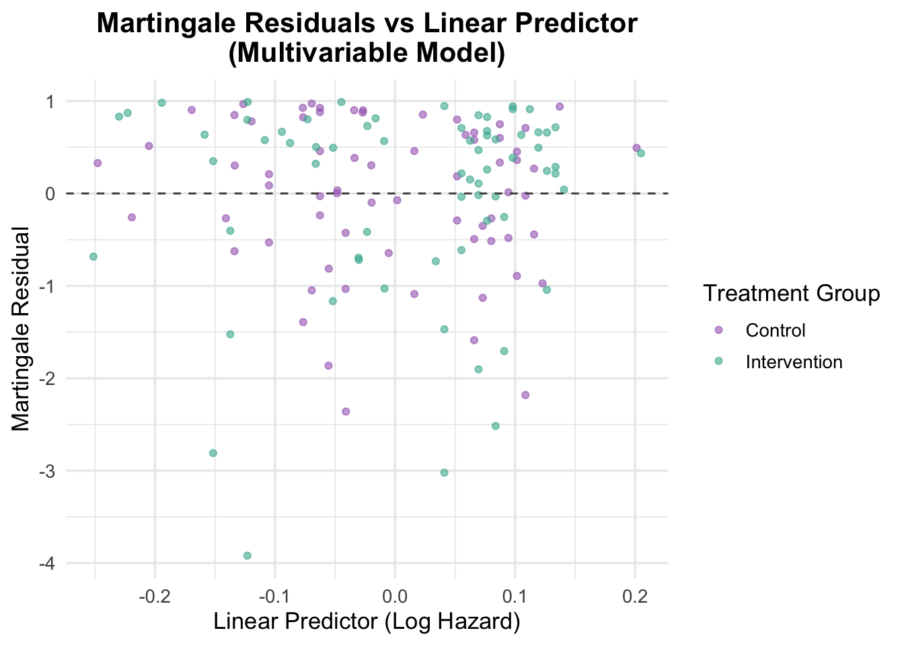
The Martingale residual plot for the prior variable shows two distinct clusters of points at 0 and 1, corresponding to patients with and without prior treatment, respectively. The residuals appear to be roughly symmetric around zero in both groups, with no strong indication of skew or heteroscedasticity. This supports the appropriateness of modeling prior as a binary variable in the Cox regression model. No transformation or alternative coding appears necessary.
4.2.3 Multivariable Cox Model with Age and Prior Treatment
In this section, we fit a multivariable Cox proportional hazards model that includes both age and prior treatment as covariates. This allows us to assess the independent effects of these variables on survival while controlling for treatment group.
Code
# Fit the multivariable Cox model including age and prior treatmentcox_multivariable <-coxph(Surv(time, status) ~ trt + age + prior, data = veteran)summary(cox_multivariable)
Call:
coxph(formula = Surv(time, status) ~ trt + age + prior, data = veteran)
n= 137, number of events= 128
coef exp(coef) se(coef) z Pr(>|z|)
trtIntervention 0.003621 1.003628 0.183151 0.020 0.984
age 0.007124 1.007149 0.009675 0.736 0.462
prior -0.013562 0.986529 0.020118 -0.674 0.500
exp(coef) exp(-coef) lower .95 upper .95
trtIntervention 1.0036 0.9964 0.7009 1.437
age 1.0071 0.9929 0.9882 1.026
prior 0.9865 1.0137 0.9484 1.026
Concordance= 0.507 (se = 0.03 )
Likelihood ratio test= 1.09 on 3 df, p=0.8
Wald test = 1.07 on 3 df, p=0.8
Score (logrank) test = 1.07 on 3 df, p=0.8
Interpreting the Cox Model Output
Understanding the coxph() output is essential for interpreting survival models. Here’s a breakdown of the most common components you’ll encounter in both univariable and multivariable Cox regressions:
🔹 coef
This is the log hazard ratio — the raw estimate from the model. It represents the change in the log hazard of the event (e.g., death) associated with a one-unit increase in the covariate (for continuous variables) or relative to a reference group (for categorical variables).
🧠 Note: Log hazards are difficult to interpret directly, so we usually exponentiate them.
🔹 exp(coef)
This is the hazard ratio (HR) — the exponentiated coef, which expresses effect size more intuitively.
exp(coef) > 1 → Increased hazard
exp(coef) < 1 → Decreased hazard
exp(coef) = 1 → No effect
🔎 Example: exp(coef) = 1.20 means a 20% higher hazard. exp(coef) = 0.80 means a 20% lower hazard.
🔹 se(coef)
The standard error of the coefficient — reflects how much uncertainty surrounds the estimate.
Smaller values = more precise estimates
Larger values = more uncertainty (due to small samples or noisy data)
🔹 z and Pr(>|z|)
- z is the Z-statistic, calculated as coef / se(coef)
- Pr(>|z|) is the p-value from the Wald test for each coefficient
This tests the null hypothesis that the covariate has no effect (coef = 0).
p < 0.05 → Statistically significant
p > 0.05 → Not statistically significant
📊 Model-Level Statistics
🔸 Concordance
- Measures the model’s ability to correctly rank survival times (similar to AUC for classification)
- Ranges from 0.5 (random) to 1.0 (perfect)
- In clinical data, values of 0.6–0.75 are typical
🔸 Likelihood Ratio Test
- Compares the full model to a null (intercept-only) model
- Tests overall model fit
- p < 0.05 = your model significantly improves fit
🔸 Wald Test
- Aggregates the individual Wald tests across all covariates
- Tests whether any coefficients differ significantly from 0
🔸 Score (Logrank) Test
- Rank-based test comparing observed vs expected survival
- Can be slightly more sensitive in small samples
- Often used as an overall model check
✅ In practice: Use all three global tests and the concordance to evaluate how well the model explains variation in survival. If all are non-significant, the model may lack predictive utility.
A multivariable Cox proportional hazards model was fitted to examine the association between survival and three covariates: treatment group, age, and prior therapy. After adjusting for all covariates:
The hazard ratio for the intervention group relative to control was 1.00 (HR = 1.00; 95% CI: 0.70–1.44; p = 0.984), indicating no evidence of a treatment effect.
Age had a hazard ratio of 1.01 per year (p = 0.462), suggesting no significant association with survival in this model.
Prior therapy also showed no effect on hazard (HR = 0.99; p = 0.500).
Model discrimination was minimal (concordance = 0.507), and all global model tests were non-significant (p = 0.8), suggesting the model does not meaningfully predict survival in this dataset.
Schoenfeld Residuals for Multivariable Model
We now assess whether the proportional hazards assumption holds for each covariate in the multivariable Cox model. This step ensures that the effect of each variable — treatment group, age, and prior therapy — is consistent over time.
Code
# Test proportional hazards assumption for the multivariable modelcox_zph_multivariable <-cox.zph(cox_multivariable)print(cox_zph_multivariable)
chisq df p
trt 3.53 1 0.060
age 1.76 1 0.184
prior 3.19 1 0.074
GLOBAL 8.80 3 0.032
The proportional hazards assumption was assessed for the multivariable Cox model using Schoenfeld residuals. The global test was statistically significant (p = 0.032), suggesting that at least one covariate may have a time-varying effect on the hazard.
At the individual variable level:
trt showed borderline evidence of non-proportionality (p = 0.060)
prior also approached significance (p = 0.074)
age did not show evidence of time-varying effects (p = 0.184)
While none of the individual tests crossed the 0.05 threshold, the cumulative result (GLOBAL p < 0.05) suggests some caution is warranted. Visual inspection of the Schoenfeld residual plots is recommended to evaluate whether these borderline findings correspond to meaningful deviations over time.
Code
# Visual checkplot(cox_zph_multivariable)
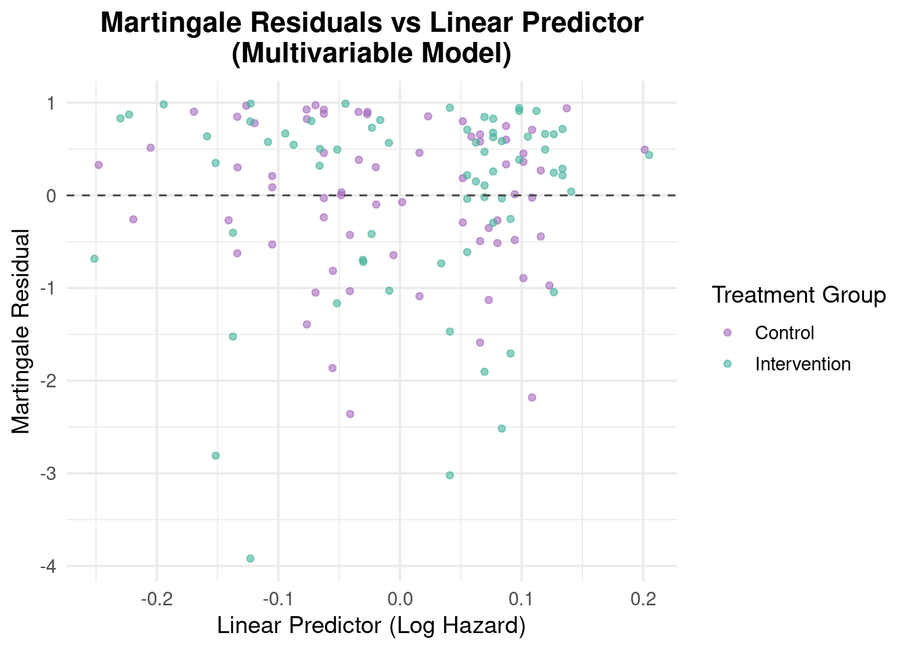
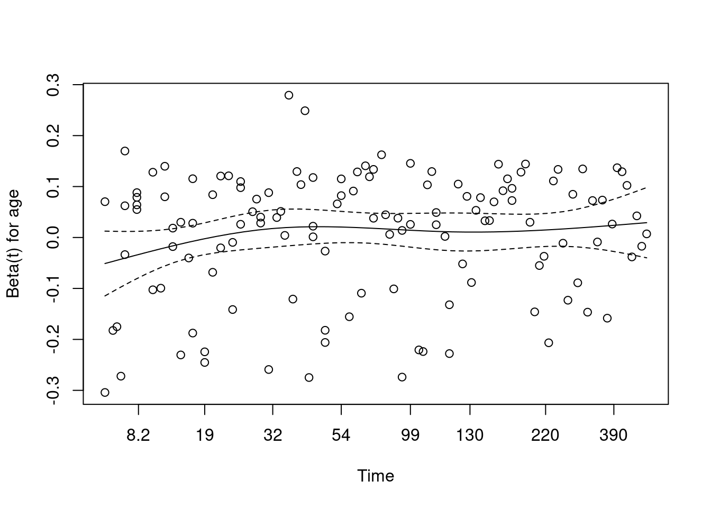
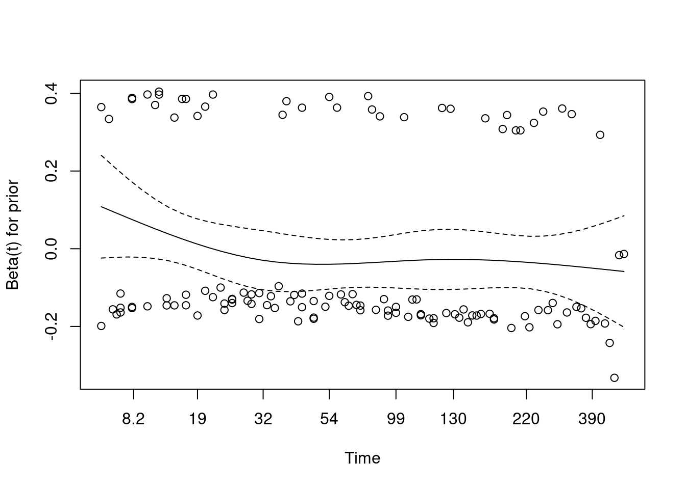
Visual inspection of the Schoenfeld residual plots for treatment group (trt), age, and prior treatment (prior) showed no substantial evidence of non-proportionality. The smoothed lines for each covariate remained relatively flat and were mostly contained within their respective 95% confidence bands across the follow-up period.
For treatment group, the smoothed beta function showed some mild undulation, but it remained within the confidence bounds, indicating no major deviation from the proportional hazards assumption.
For age, the trend line was nearly horizontal with minimal fluctuation, strongly supporting time-invariant effects.
For prior treatment, the estimated beta also remained relatively stable over time, with the confidence interval consistently covering zero.
Together, these plots support the conclusion that the proportional hazards assumption is reasonably satisfied for each covariate in the multivariable model, aligning with the statistical test results where none of the individual covariate tests were significant at the 0.05 level.
Martingale Residuals for Multivariable Model
We now examine the Martingale residuals from the multivariable Cox model to evaluate the overall model fit and identify any patterns or potential outliers in the covariate effects.
Code
# Generate Martingale residualsveteran$martingale_multivariable <-residuals(cox_multivariable, type ="martingale")# Generate linear predictorveteran$linear_pred_multivariable <-predict(cox_multivariable, type ="lp")# Plot residuals against linear predictorggplot(veteran, aes(x = linear_pred_multivariable, y = martingale_multivariable, color = trt)) +geom_point(alpha =0.6) +geom_hline(yintercept =0, linetype ="dashed", color ="grey30") +theme_minimal(base_size =13) +labs(title ="Martingale Residuals vs Linear Predictor\n(Multivariable Model)",x ="Linear Predictor (Log Hazard)",y ="Martingale Residual",color ="Treatment Group" ) +scale_color_manual(values =c("Control"="#A569BD", "Intervention"="#45B39D")) +theme(plot.title =element_text(hjust =0.5, face ="bold"))
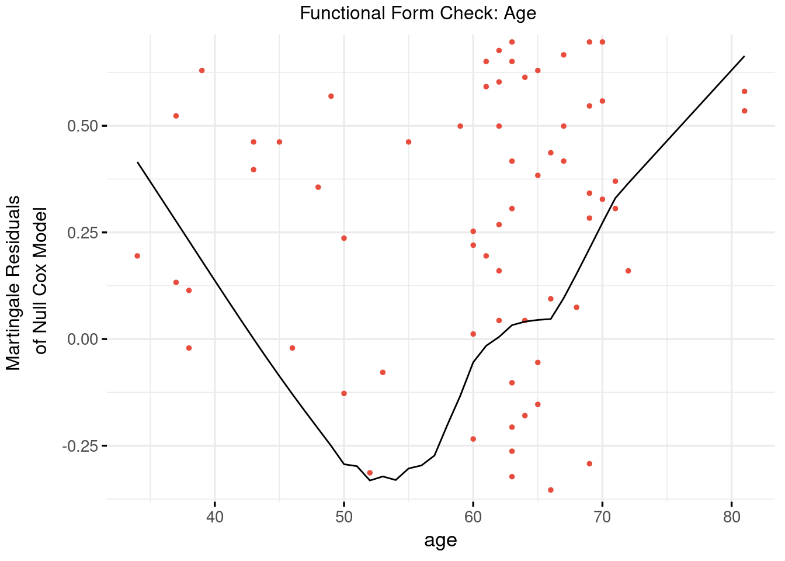
The Martingale residuals plotted against the linear predictor for the multivariable model appear randomly scattered around the horizontal zero line, with no clear pattern, curvature, or systematic deviation. This suggests that the overall functional form of the covariates (treatment, age, and prior treatment) is reasonably specified. There is no strong evidence of model misspecification or non-linearity in the combined effects. However, the narrow spread of the linear predictor values (mostly between -0.2 and 0.2) reflects the modest effect sizes and limited variation in the log hazard estimates, which aligns with the model’s lack of significant predictors.
What This Plot Tells Us
Martingale residuals help assess how well the Cox model fits the data.
A good model will show residuals scattered symmetrically around zero with no systematic pattern.
Since we are plotting residuals against the linear predictor (the model’s estimate of log hazard for each individual), this acts as a catch-all for checking overall model specification.
In this case:
There’s no strong non-linear trend.
No excessive clustering or heteroskedasticity.
Values are distributed fairly evenly above and below the zero line.
Conclusion: The model appears reasonably well-specified, and no major violations are detected.
Functional Form Check for Continuous Covariates
We now recheck the functional form of the continuous variable age within the multivariable Cox model to ensure its effect on the log hazard remains appropriately modeled as linear.
Code
# Refit a univariable model with age (again, for functional form check)cox_age_for_form_check <-coxph(Surv(time, status) ~ age, data = veteran)# Plot functional form using ggcoxfunctionalggcoxfunctional(fit = cox_age_for_form_check,data = veteran,point.col ="#E74C3C",ggtheme =theme_minimal(base_size =13),title ="Functional Form Check: Age")
The Martingale residual plot for age reveals a clear U-shaped curve, suggesting that the assumption of linearity in the log hazard may not hold. This implies that age may have a non-linear effect on survival, and modeling it as a simple linear term may lead to misestimation of its effect. A transformation (e.g., quadratic or restricted cubic splines) may be warranted in further analysis.
Why Check Functional Form Again in a Multivariable Model?
While functional form checks (e.g., using Martingale residuals) are only necessary for continuous covariates, it’s important to reassess them in the context of the full model — even if they passed in a univariable setting.
In a univariable Cox model, we check whether the continuous variable (e.g., age) has a linear relationship with the log hazard.
However, once we add other covariates (like treatment or prior therapy), the relationship can change due to confounding or interactions.
A variable might look linear on its own, but show non-linearity when adjusted for other predictors.
So we recheck only the continuous variables (e.g., age) in the multivariable model to ensure the assumption still holds.
4.2.4 Multivariable Cox Model with Spline-Transformed Age
We refit the Cox model using a restricted cubic spline to model the non-linear relationship between age and the log hazard. This allows for greater flexibility in capturing age-related risk while still accounting for treatment and prior therapy.
Understanding Spline and Non-Linear Transformations in Survival Models
Why model transformations at all?
The Cox Proportional Hazards model assumes that each covariate has a linear relationship with the log hazard. For continuous variables like age, this means that each one-unit increase is expected to have the same multiplicative effect on the hazard — regardless of whether someone is 40 or 80 years old. This is often unrealistic.
To fix this, we apply non-linear transformations to more accurately capture the shape of the relationship between a variable (like age) and the outcome (e.g., death).
What are spline transformations?
Splines are a flexible way to model non-linear relationships without explicitly specifying the form of the curve. They break a variable into segments using predefined cut points called knots, and fit separate curves (usually polynomials) between them, ensuring smoothness at the joins.
They allow the model to “bend” as needed — making them perfect for capturing complex patterns in the data.
Common types of transformations:
• Restricted Cubic Splines (Natural Splines):
This is the most common spline in Cox models. It creates piecewise cubic polynomials between knots, but constrains the ends to be linear — which prevents overfitting at the tails.
✅ Best for flexible yet stable curve fitting
📌 Recommended when you suspect non-linearity but don’t want to manually test transformations
• Quadratic or Polynomial Terms (e.g., age + I(age^2)):
Adds a squared (or cubic) term to capture curvature.
✅ Simple to interpret
⚠️ Risky at the extremes — can overfit or behave erratically
• Log Transformations (e.g., log(age)):
Used when the effect decelerates — i.e., rapid effect early on that flattens with increasing value.
✅ Great when data is skewed
⚠️ Doesn’t work if the variable contains 0s or negatives
• Categorization (e.g., age groups):
Turns a continuous variable into bins (e.g., under 50, 50–65, over 65).
✅ Easy to explain
⚠️ Loses statistical power and may mislead if cutoffs are arbitrary
When should you use each?
Transformation
Use when…
Splines (ns())
You want a smooth, data-driven relationship
Quadratic term
You suspect a simple “U-shaped” or curvilinear trend
Log transform
The variable increases rapidly then levels off
Categories
Clinical guidelines or reporting require it
How many knots do I use for splines?
A good rule of thumb (Harrell, 2015):
3 knots: small datasets (n < 100)
4–5 knots: medium datasets (n ~ 100–300)
5–7 knots: large datasets
Knots are often placed at percentiles of the variable — e.g., 5th, 35th, 65th, 95th percentile.
Final tip: Always re-check Schoenfeld residuals and Martingale residuals after applying any transformation.
Model Output
Code
# Fit a Cox model with restricted cubic splines for agecox_spline <-coxph(Surv(time, status) ~ns(age, df =3) + trt + prior, data = veteran)summary(cox_spline)
A multivariable Cox proportional hazards model incorporating a restricted cubic spline transformation of age (df = 3) was fitted to explore potential non-linear effects of age on survival. None of the individual spline terms were statistically significant at the 0.05 level (p = 0.906, 0.143, and 0.157), suggesting that while the spline captures flexibility, the overall contribution of age remains statistically weak.
The treatment group (p = 0.626) and prior therapy (p = 0.640) also remained non-significant. Model-level tests showed that the likelihood ratio test (p = 0.1), Wald test (p = 0.1), and score test (p = 0.1) were all non-significant, indicating that the model, as specified, may not provide strong explanatory power.
However, the model’s concordance improved slightly to 0.559 compared to the linear age model, suggesting a modest increase in predictive ability. While not conclusive, the use of splines helps satisfy the functional form assumption and could be valuable if future models identify stronger non-linear trends or interactions with age.
Schoenfeld Residuals for Spline Model
Code
# Test proportional hazards assumption for the spline modelcox.zph(cox_spline)
chisq df p
ns(age, df = 3) 4.52 3 0.211
trt 2.50 1 0.114
prior 3.08 1 0.079
GLOBAL 8.84 5 0.116
A Cox proportional hazards model incorporating a restricted cubic spline transformation of age (df = 3) demonstrated acceptable fit to the proportional hazards assumption across all covariates. The global Schoenfeld residuals test was non-significant (p = 0.116), suggesting that the model adequately satisfies the proportional hazards assumption. Individually, spline-transformed age (p = 0.211), treatment group (p = 0.114), and prior treatment (p = 0.079) all showed no significant time-dependent effects.
Code
# Visual check of Schoenfeld residuals for spline modelplot(cox.zph(cox_spline))
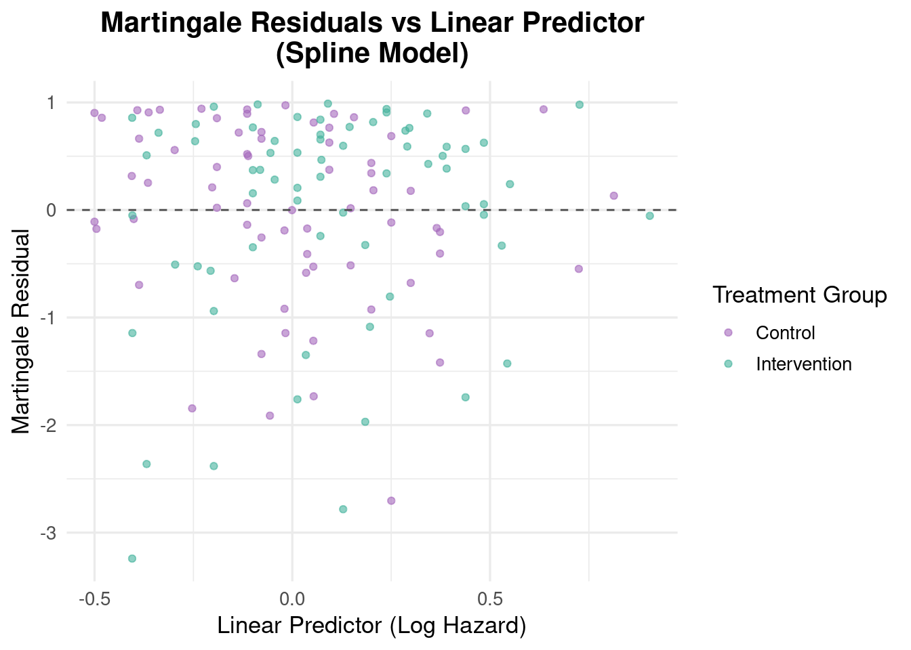
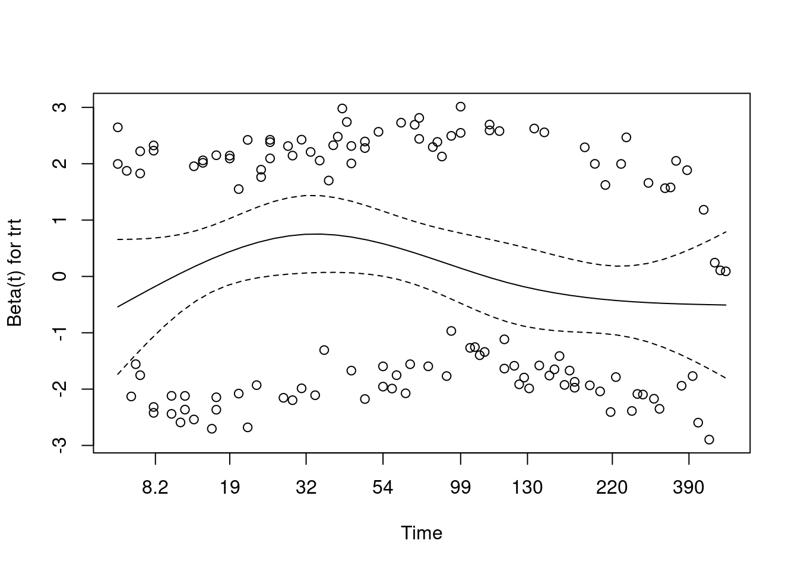
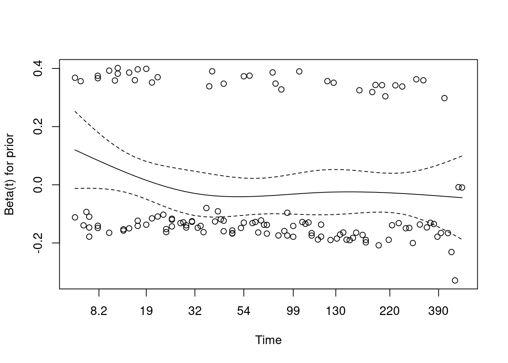
The Schoenfeld residuals were examined for the final multivariable Cox model, which included a spline-transformed age term. Across all covariates—age (using splines), treatment group (trt), and prior treatment (prior)—the smoothed residual lines remained relatively flat and within the 95% confidence intervals, suggesting no strong evidence of time-varying effects.
Age (spline-transformed): Despite some visual variability, the three spline basis functions for age each produce smoothed lines that remain stable across time. Importantly, the confidence intervals broadly contain zero, indicating that the assumption of proportionality is not clearly violated despite the model’s non-linear specification.
Treatment (trt): The smoothed residual curve shows a mild wave-like pattern, but this fluctuation stays well within the confidence bands and does not indicate a strong trend over time. While a borderline global p-value was observed in earlier models, the residuals here provide no compelling evidence against the proportional hazards assumption for treatment.
Prior Treatment (prior): The smoothed residual line is relatively flat, and although the lower bound of the 95% confidence interval occasionally hovers just below zero, this does not strongly suggest non-proportionality. The overall trend appears stable, and the residuals provide visual reassurance that prior treatment’s effect on hazard is consistent over time.
Martingale Residuals for Spline Model
Code
# Residuals vs linear predictorveteran$martingale_spline <-residuals(cox_spline, type ="martingale")veteran$linear_pred_spline <-predict(cox_spline, type ="lp")ggplot(veteran, aes(x = linear_pred_spline, y = martingale_spline, color = trt)) +geom_point(alpha =0.6) +geom_hline(yintercept =0, linetype ="dashed", color ="grey30") +theme_minimal(base_size =13) +labs(title ="Martingale Residuals vs Linear Predictor\n(Spline Model)",x ="Linear Predictor (Log Hazard)",y ="Martingale Residual",color ="Treatment Group" ) +scale_color_manual(values =c("Control"="#A569BD", "Intervention"="#45B39D")) +theme(plot.title =element_text(hjust =0.5, face ="bold"))
The plot displays Martingale residuals against the linear predictor (log hazard) for the spline-transformed Cox model. The residuals appear randomly scattered around the horizontal zero line, without a discernible systematic pattern or curvature. This suggests that the model has adequately captured the relationship between the covariates and the outcome.
The use of restricted cubic splines for age appears to have addressed any previously observed non-linearity, as there is no strong evidence of model misfit. The distribution of residuals across treatment groups also seems relatively balanced, with no obvious separation or heteroscedasticity.
The model’s functional form is appropriate, and the spline transformation has improved the model’s fit by flexibly accommodating the non-linear effect of age.
4.2.5 Model Comparison: Linear vs Spline Age Term
We now compare the original multivariable Cox model with age modeled linearly to the updated model using a spline transformation for age. This allows us to formally test whether the added flexibility of the spline significantly improves model fit.
Code
# Compare linear age model vs spline-transformed age modelanova(cox_multivariable, cox_spline, test ="LRT")
Analysis of Deviance Table
Cox model: response is Surv(time, status)
Model 1: ~ trt + age + prior
Model 2: ~ ns(age, df = 3) + trt + prior
loglik Chisq Df Pr(>|Chi|)
1 -504.90
2 -500.95 7.9117 2 0.01914 *
---
Signif. codes: 0 '***' 0.001 '**' 0.01 '*' 0.05 '.' 0.1 ' ' 1
A likelihood ratio test comparing a model with age modeled linearly to one using restricted cubic splines (df = 3) showed a statistically significant improvement in fit (χ² = 7.91, df = 2, p = 0.019). This suggests that the effect of age on survival is non-linear, and that modeling age with splines better captures its relationship with hazard.
Visualizing the Effect of Spline-Transformed Age
This section uses ‘termplot()’ to visualize how the hazard changes across age when modeled as a spline. This provides an intuitive look at the non-linear relationship.
Understanding ANOVA in Cox Regression
In the context of Cox proportional hazards models, ANOVA isn’t used in the traditional sense (like comparing means). Instead, it’s a way of comparing nested models using their log-likelihoods.
This is typically done using the Likelihood Ratio Test (LRT), which answers the question:
“Does the more complex model fit significantly better than the simpler one?”
🔍 What the Output Shows:
Model 1: The simpler model (fewer terms or more constrained terms)
Model 2: The more complex model (extra variables or flexible terms, e.g., splines)
Log-likelihoods: How well each model fits the data (less negative = better)
Chisq: Computed as 2 × (LL₂ − LL₁)
Degrees of freedom: Difference in number of parameters
p-value: Significance of improvement in fit
✅ How to Interpret:
p < 0.05 → The complex model fits significantly better → keep it
p ≥ 0.05 → No meaningful improvement → stick with the simpler model
This approach is especially useful for: - Deciding whether to model continuous variables non-linearly (e.g., with splines) - Evaluating whether new covariates add predictive value - Performing stepwise model refinement
📦 Takeaway:
Use ANOVA/LRT in Cox regression to guide decisions about model complexity vs parsimony, balancing better fit with interpretability.
Code
termplot(cox_spline, se =TRUE, col.term ="blue")
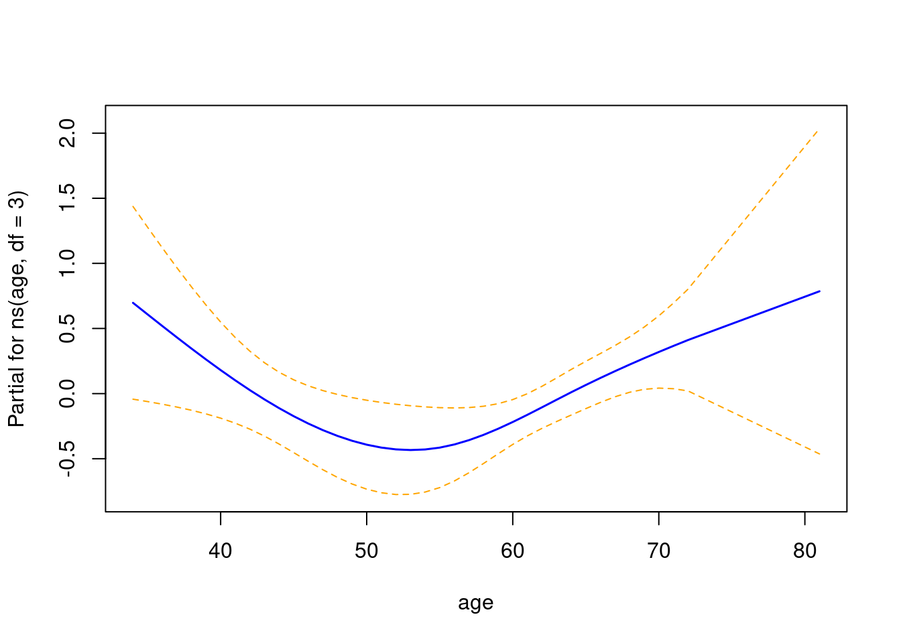
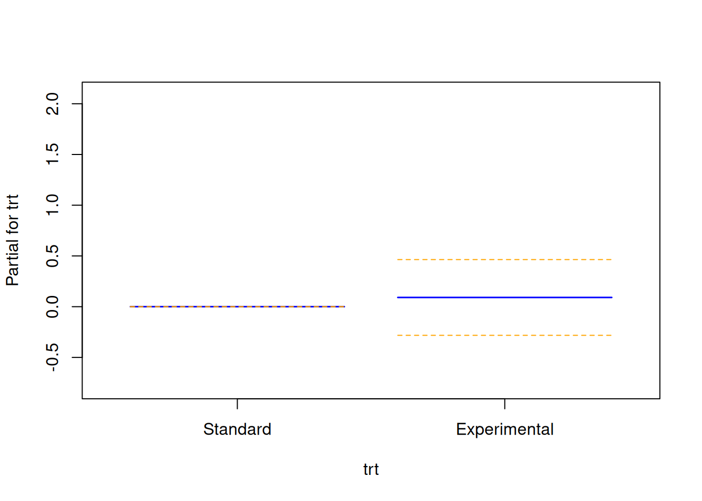
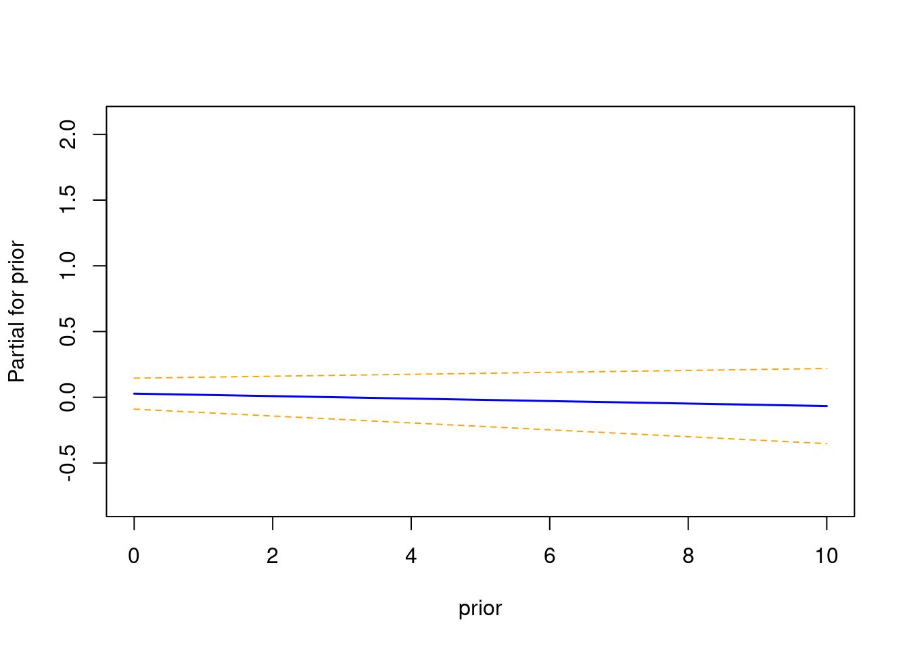
The term plots from the spline-based Cox proportional hazards model illustrate the partial effect of each covariate on the log hazard:
Age (modeled using natural splines with 3 degrees of freedom) exhibits a non-linear association with the log hazard. The curve displays a shallow U-shape, with the lowest hazard around age 55, and a gradual increase in hazard at both younger and older ages. While the trend is suggestive, the wide confidence intervals—particularly at the distribution tails—indicate uncertainty in the precise shape of this relationship.
Treatment Group (trt) is represented as a binary variable with two flat lines, one for each group. The narrow confidence intervals overlap with zero, implying no statistically significant difference in log hazard between the intervention and control arms in this model.
Prior Treatment (prior) also shows a flat trend across the range of prior treatments, with confidence bands consistently containing zero. This suggests that the number of prior therapies does not contribute meaningfully to hazard estimation when adjusting for age and treatment.
These visualizations support the statistical findings from the model summary. Age is the only covariate showing a potentially complex, non-linear effect, while treatment and prior exposure show no clear independent impact on survival in this cohort.
How to Interpret Term Plots in Cox Models
Term plots visualize the partial effect of each covariate in a fitted model while holding other variables constant. They are especially helpful for interpreting transformations like splines.
🔹 What is a term plot?
A term plot shows how the log hazard (on the y-axis) changes with a covariate (on the x-axis), after accounting for all other variables in the model.
The blue line is the estimated partial effect of that variable.
The dashed orange lines show the 95% confidence interval.
The interpretation depends on the type of variable:
🔸 Continuous Variables (e.g., Age):
For linear terms, the blue line should be roughly straight.
For splines or transformed terms:
A curved blue line indicates a non-linear relationship.
Areas where the confidence band does not include 0 suggest a statistically significant effect on the log hazard.
Patterns like U-shapes, inflection points, or steep climbs reveal how risk evolves across the covariate range.
One for each group (e.g., Control = 0, Intervention = 1).
The difference between the two shows the log hazard shift due to that variable.
If the confidence intervals include zero, there’s no strong evidence that the variable affects the hazard.
✅ Best Uses:
Confirming that spline-transformed terms behave as expected.
Checking if a linear term should be transformed (e.g., age might be better modeled with splines).
Double-checking whether binary variables have any meaningful effect.
🧠 Tip: Term plots don’t replace statistical tests, but they visualize model estimates clearly and intuitively.
5 Interaction or Additive Effects?
In Cox regression, interaction terms allow us to test whether the effect of one covariate on the hazard changes depending on the level of another covariate. If significant, this suggests a departure from simple additivity and may require stratified or more complex modelling.
Understanding Interaction Effects in Cox Models
In regression models—including Cox proportional hazards models—an interaction effect tests whether the relationship between a covariate and the outcome changes depending on the level of another covariate.
In practical terms, interaction terms allow us to ask:
> “Does the effect of Variable A on survival depend on Variable B?”
Why Test for Interaction?
To explore whether treatment effects vary across subgroups (e.g., age, gender, biomarker levels).
To identify non-additive relationships that a main-effects-only model would miss.
To refine risk stratification or support personalized approaches to care.
What It Tells Us
In the Cox model, including an interaction (e.g., treatment * age) allows the hazard ratio for treatment to vary at different values of age. If the interaction term is statistically significant, it suggests the effect of treatment is modified by age.
This can reveal: - A treatment that works well in younger patients but poorly in older ones. - A covariate that only has an impact in the presence of another factor. - Complex survival dynamics that are hidden in simpler additive models.
Interpreting Output
A significant interaction coefficient indicates a departure from additivity.
It’s essential to cautiously interpret main effects in the presence of interactions, as their meaning may be conditional.
Visualization (e.g., stratified survival curves or effect plots) can aid interpretation.
When to Use
After fitting and interpreting a main-effects model.
When clinical theory or prior evidence suggests effect modification.
When residual plots or diagnostics hint at unexplained heterogeneity.
5.1 Interaction of Treatment and Age
Code
# Fit a cox model with interaction between treatment and age cox_interaction <-coxph(Surv(time, status) ~ trt *ns(age, df =3) + prior, data = veteran)summary(cox_interaction)
We tested for interaction between treatment group and age (modeled using natural splines with 3 degrees of freedom) to explore whether the effect of treatment on survival varied across age groups. The interaction model revealed a statistically significant interaction for the second spline basis term (p = 0.037), suggesting a possible age-dependent treatment effect.
The overall Wald test for the model approached significance (p = 0.05), while the likelihood ratio test was marginal (p = 0.07), indicating that the model with interaction terms may provide a better fit than the additive model. These findings suggest that the benefit (or lack thereof) of treatment may differ depending on patient age, warranting further exploration or stratified modelling.
Schoenfeld Residuals for Interaction Model
Code
# Test proportional hazards assumption for the interaction modelcox.zph(cox_interaction)
chisq df p
trt 1.39 1 0.24
ns(age, df = 3) 3.90 3 0.27
prior 2.42 1 0.12
trt:ns(age, df = 3) 5.37 3 0.15
GLOBAL 8.94 8 0.35
The Schoenfeld residual test was used to assess whether the proportional hazards assumption holds for each covariate and interaction term in the model.
trt: χ² = 1.39, p = 0.24 → No evidence of time-varying effects for treatment group.
ns(age, df = 3): χ² = 3.90, p = 0.27 → The spline-transformed age term shows no strong time dependency.
prior: χ² = 2.42, p = 0.12 → Also not statistically significant.
trt × ns(age, df = 3): χ² = 5.37, p = 0.15 → The interaction between age and treatment shows no significant violation of proportionality either.
GLOBAL test: χ² = 8.94 on 8 df, p = 0.35 → The model as a whole satisfies the PH assumption.
There is no strong evidence that the proportional hazards assumption is violated in this interaction model. The covariate effects, including the interaction, appear stable over time.
Code
# Visual check of Schoenfeld residuals for interaction modelplot(cox.zph(cox_interaction))
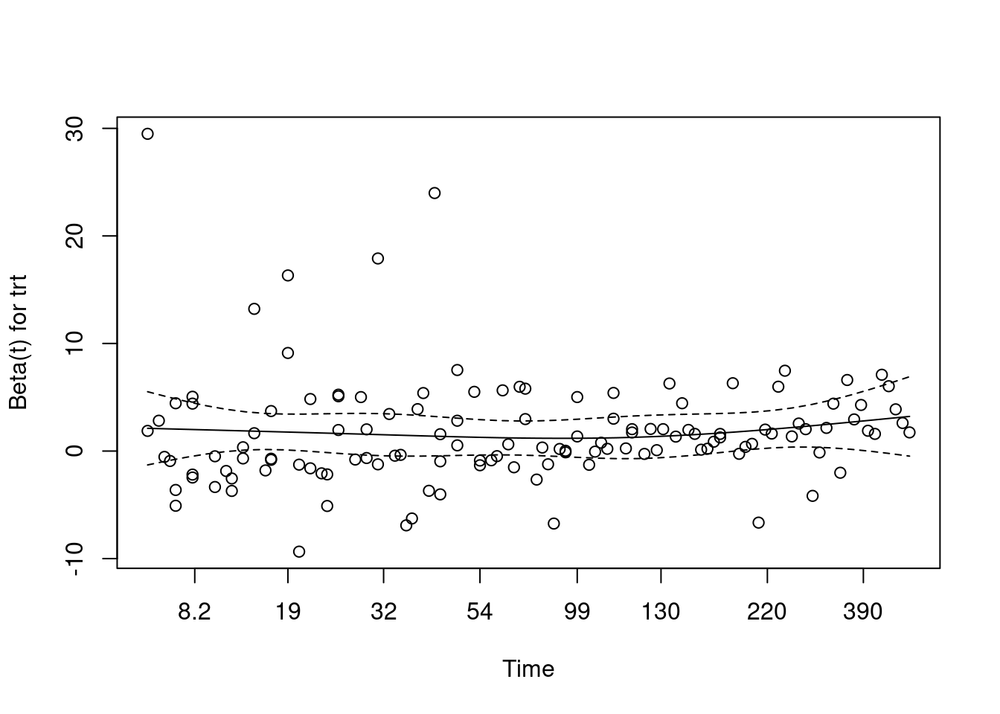
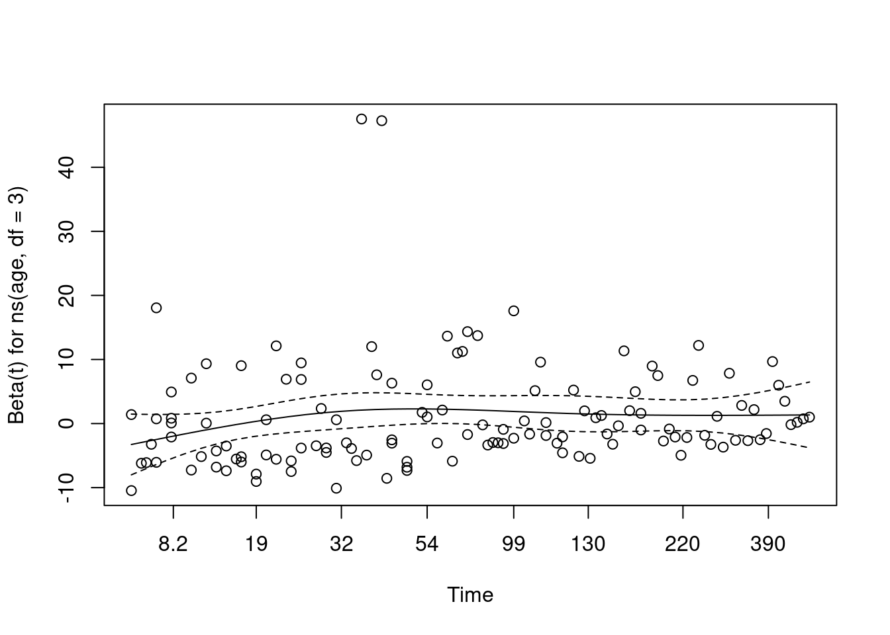
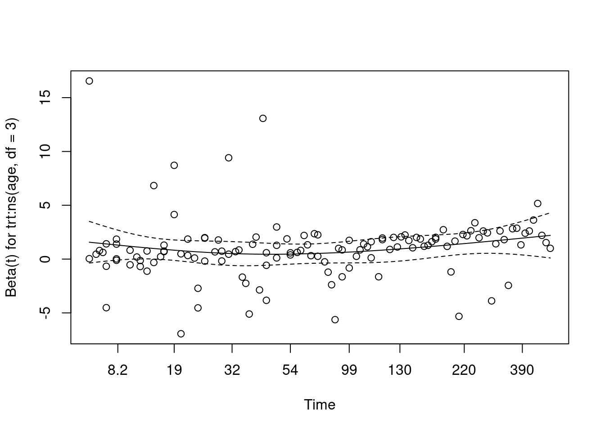
The global test using cox.zph() indicated no significant violation of the PH assumption (χ² = 8.94, df = 8, p = 0.35). Individual covariate tests also returned non-significant p-values, suggesting that the estimated hazard ratios remain approximately constant over time.
Visual inspection of the Schoenfeld residual plots supported this conclusion. The smoothed curves for treatment, age (spline terms), prior treatment, and their interaction remained relatively flat and within their 95% confidence bands. While a few outliers were present—particularly in the treatment and age components—these did not indicate strong evidence of non-proportionality.
Taken together, these results suggest that the proportional hazards assumption is reasonably met for all terms in the interaction model.
Martingale Residuals for Interaction Model
The Martingale residuals from the interaction model were plotted against the linear predictor (log hazard) to assess model fit and identify any potential patterns or outliers.
Code
# Residuals vs linear predictorveteran$martingale_interaction <-residuals(cox_interaction, type ="martingale")veteran$linear_pred_interaction <-predict(cox_interaction, type ="lp")ggplot(veteran, aes(x = linear_pred_interaction, y = martingale_interaction, color = trt)) +geom_point(alpha =0.6) +geom_hline(yintercept =0, linetype ="dashed", color ="grey30") +theme_minimal(base_size =13) +labs(title ="Martingale Residuals vs Linear Predictor\n(Interaction Model)",x ="Linear Predictor (Log Hazard)",y ="Martingale Residual",color ="Treatment Group" ) +scale_color_manual(values =c("Control"="#A569BD", "Intervention"="#45B39D")) +theme(plot.title =element_text(hjust =0.5, face ="bold"))
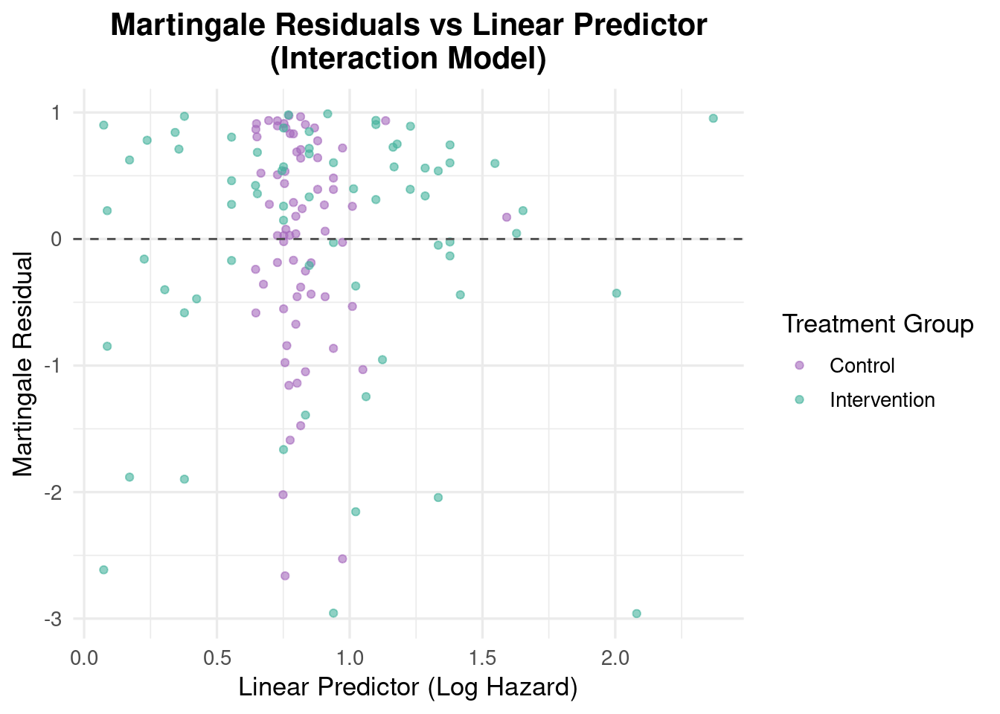
The Martingale residuals plot from the interaction model reveals a concentration of predicted log hazard values for the control group between 0.5 and 1.0, whereas predictions for the intervention group span a wider range. This may reflect the influence of the age-by-treatment interaction term, which adds complexity primarily for patients receiving the intervention. The residuals themselves are randomly scattered around zero, suggesting that the functional form of the covariates is appropriately specified and that no major nonlinearity remains unaccounted for.
Deviance Residuals for Interaction Model
Deviance residuals were generated to further assess the model fit and identify any potential outliers or influential observations.
Understanding Deviance Residuals in Cox Models
Deviance residuals are a type of diagnostic measure used to assess how well a Cox proportional hazards model fits the observed survival data. Each deviance residual reflects the discrepancy between the observed outcome (event or censoring) and what the model predicts for an individual, after accounting for all covariates.
🔍 Why we use them: - Outlier detection: Large residuals (positive or negative) may indicate subjects whose survival times were poorly predicted by the model. - Model fit check: If residuals cluster systematically or display non-random patterns when plotted against the linear predictor, it may suggest issues such as: - Mis-specification of functional form (e.g., nonlinear effects not properly captured), - Omitted interactions or variables, - Violation of model assumptions.
📊 How to interpret: - Deviance residuals are approximately normally distributed around 0. - Values far from zero may indicate poor fit for specific observations. - A balanced, symmetrical scatter around the horizontal axis suggests a well-fitting model.
🧠 When to use: - After fitting a Cox model, especially when refining the covariate structure. - In combination with martingale and Schoenfeld residuals to build a comprehensive diagnostic view. - Before finalizing your model, particularly if you are considering transformations or interactions.
💡 Bonus tip: Unlike martingale residuals, deviance residuals are symmetrically distributed and therefore better suited for identifying both under- and over-predictions, making them particularly useful for graphical diagnostics.
Code
# Deviance residualsveteran$deviance_interaction <-residuals(cox_interaction, type ="deviance")# Plot deviance residualsggplot(veteran, aes(x = linear_pred_interaction, y = deviance_interaction, color = trt)) +geom_point(position =position_jitter(width =0.1), alpha =0.6) +# Adding jitter to avoid overlapgeom_hline(yintercept =0, linetype ="dashed", color ="grey30") +theme_minimal(base_size =13) +labs(title ="Deviance Residuals vs Linear Predictor\n(Interaction Model)",x ="Linear Predictor (Log Hazard)",y ="Deviance Residual",color ="Treatment Group" ) +scale_color_manual(values =c("Control"="#A569BD", "Intervention"="#45B39D")) +theme(plot.title =element_text(hjust =0.5, face ="bold"))
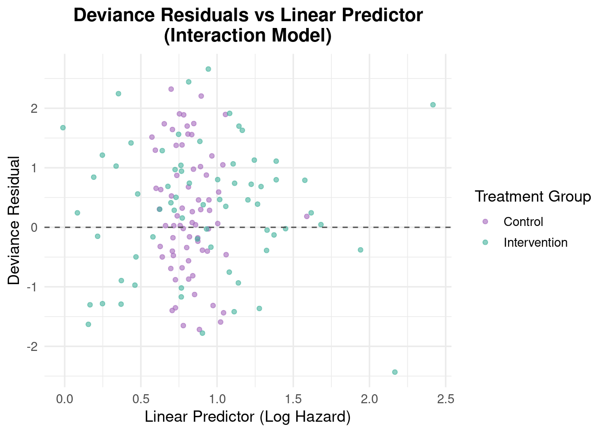
The deviance residual plot provides a diagnostic check on the adequacy of the Cox proportional hazards model that includes an interaction between treatment and age. In this plot, residuals are symmetrically distributed around zero with no discernible curvature or trend, suggesting that the model fits the data reasonably well.
Notably, the intervention group shows a broader range of linear predictor values (i.e., estimated log hazard), indicating greater variability in predicted risk compared to the control group, which clusters tightly between 0.5 and 1.0. Despite this asymmetry in predictor spread, the vertical dispersion of residuals remains balanced, and no strong outliers or patterns emerge. This supports the appropriateness of the interaction model and suggests no serious violations of model assumptions related to functional form or influential observations.
Overall, the deviance residuals confirm that the model adequately captures the observed survival data, with no clear evidence of misfit or heteroscedasticity.
5.2 Interaction of Treatment and Prior Therapy
Prior treatments might alter a patient’s response to new therapies (e.g., due to resistance, immune suppression, or cumulative toxicity).
Code
# Fit a cox model with interaction between treatment and prior therapycox_interaction_prior <-coxph(Surv(time, status) ~ trt * prior +ns(age, df =3), data = veteran)summary(cox_interaction_prior)
A Cox proportional hazards model including an interaction between treatment and prior therapy was fitted to assess potential effect modification. The interaction term (trt × prior) yielded a hazard ratio of 0.94 (95% CI: 0.87–1.02, p = 0.135), suggesting that the effect of treatment may be modestly attenuated in patients who had received prior therapy. However, this association did not reach statistical significance. Model-level tests (Likelihood Ratio, Wald, and Score) were borderline (p = 0.07–0.08), indicating weak evidence that the inclusion of an interaction term may improve model fit. While these findings are not conclusive in this sample, they raise the possibility of effect modification that could be explored further in larger, more adequately powered studies.
Schoenfeld Residuals for Interaction with Prior Therapy
Code
# Test proportional hazards assumption for the interaction with prior therapycox.zph(cox_interaction_prior)
chisq df p
trt 2.14 1 0.144
prior 2.71 1 0.100
ns(age, df = 3) 4.63 3 0.201
trt:prior 3.70 1 0.054
GLOBAL 9.04 6 0.171
The proportional hazards assumption was assessed using Schoenfeld residuals. The global test did not indicate violation (p = 0.171), supporting the use of the Cox model. Most individual terms showed no evidence of non-proportionality, though the interaction between treatment and prior therapy (trt:prior) was borderline (p = 0.054). This may suggest some time-dependent behavior in how prior treatment modifies the treatment effect, though the evidence is not conclusive.
Code
# Visual check of Schoenfeld residuals for interaction with prior therapyplot(cox.zph(cox_interaction_prior))
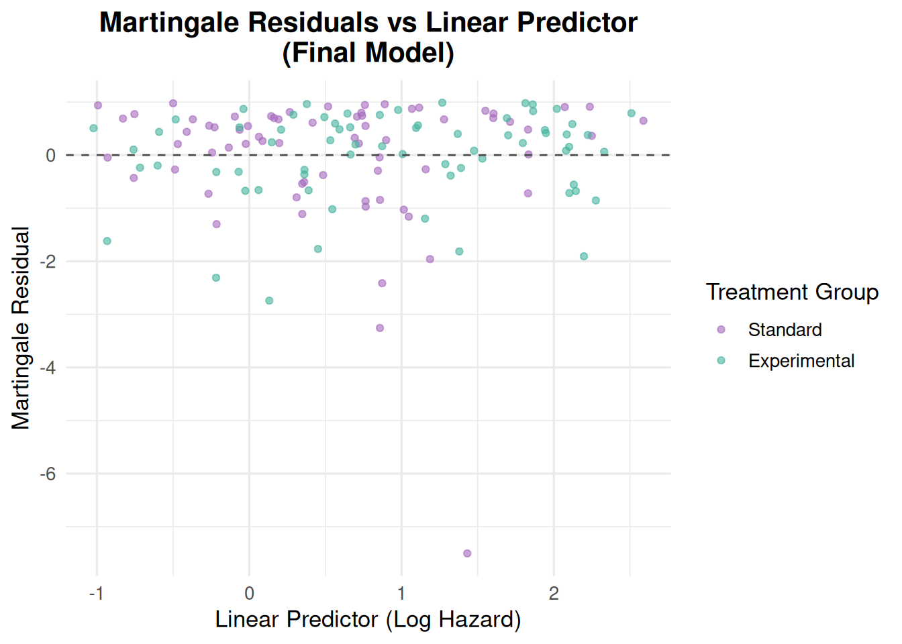
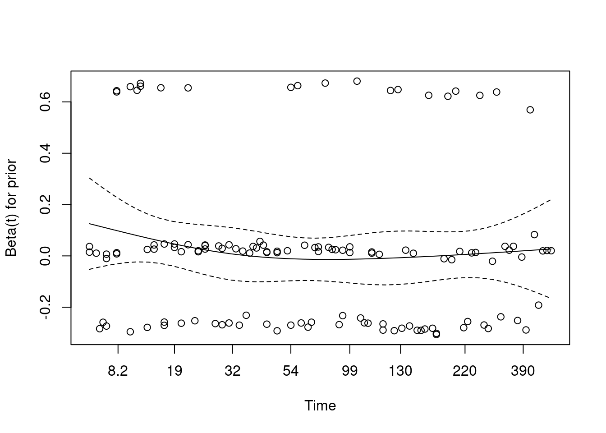
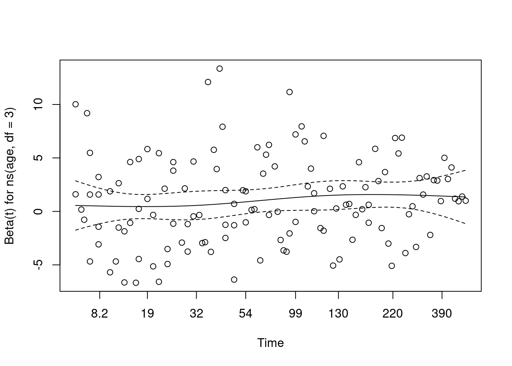
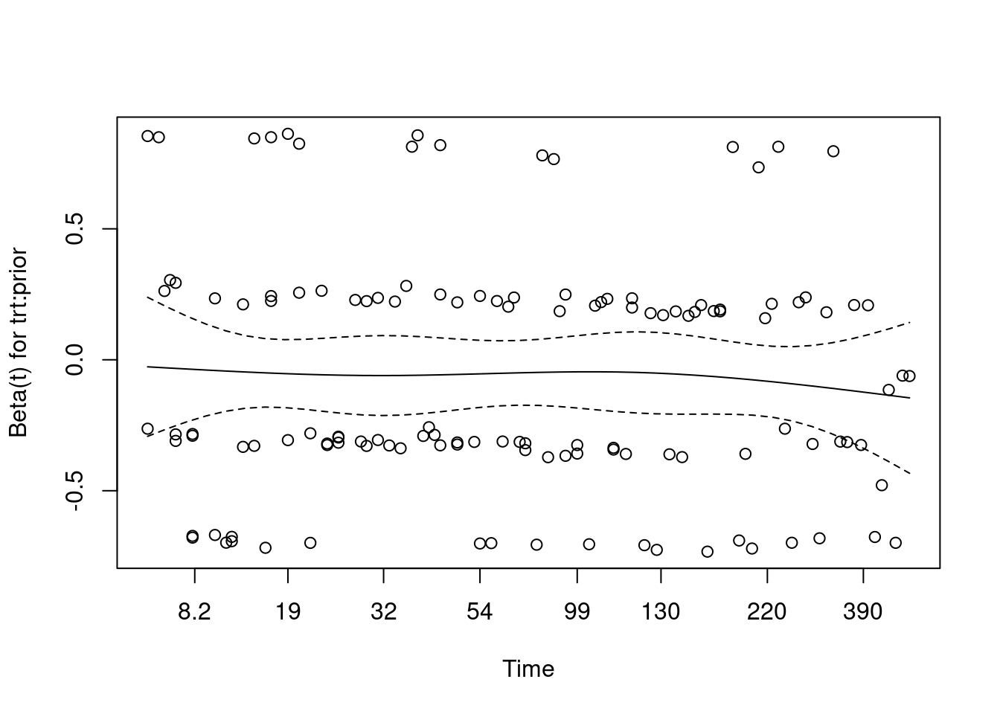
To assess whether the proportional hazards (PH) assumption holds in the model including an interaction between treatment and prior therapy, Schoenfeld residuals were examined both statistically and graphically.
The global test for the PH assumption was not significant (p = 0.17), and all individual covariates—including the interaction term—also showed non-significant test results (all p > 0.05), suggesting no strong evidence of time-varying effects.
Visual inspection of the residual plots supports this conclusion. For all variables, including trt, prior, age (splines), and the interaction term trt × prior, the smoothed lines remain relatively flat over time, and their 95% confidence bands generally include zero. While the plots for trt and prior show some scatter at the extremes—with several residuals appearing as outliers above and below the bands—these deviations do not appear systematic or directional.
In particular, the clusters of points outside the confidence bounds likely reflect the influence of a small number of high-leverage observations rather than a violation of the PH assumption. These artifacts are common in small-to-moderate datasets, especially when stratifying by interactions.
Conclusion: There is no strong statistical or visual evidence to reject the PH assumption for this interaction model. However, the presence of some outlier residuals may warrant further sensitivity analysis in larger samples.
Martingale Residuals for Interaction with Prior Therapy
Code
# Residuals vs linear predictorveteran$martingale_interaction_prior <-residuals(cox_interaction_prior, type ="martingale")veteran$linear_pred_interaction_prior <-predict(cox_interaction_prior, type ="lp")ggplot(veteran, aes(x = linear_pred_interaction_prior, y = martingale_interaction_prior, color = trt)) +geom_point(alpha =0.6) +geom_hline(yintercept =0, linetype ="dashed", color ="grey30") +theme_minimal(base_size =13) +labs(title ="Martingale Residuals vs Linear Predictor\n(Interaction with Prior Therapy)",x ="Linear Predictor (Log Hazard)",y ="Martingale Residual",color ="Treatment Group" ) +scale_color_manual(values =c("Control"="#A569BD", "Intervention"="#45B39D")) +theme(plot.title =element_text(hjust =0.5, face ="bold"))
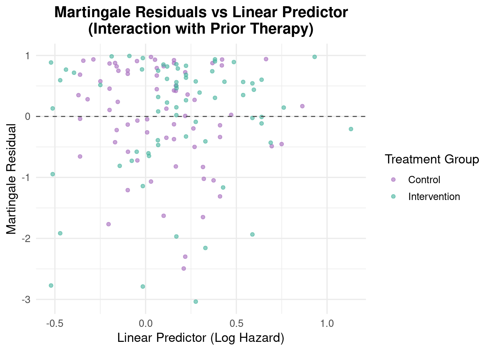
The martingale residual plot shows the residuals plotted against the linear predictor (log hazard), grouped by treatment arm. In this context, the martingale residuals help assess the model’s functional form — particularly whether the covariates are correctly specified (e.g., linearity assumptions, missing covariates, or poorly modeled interactions). Key Observations:
Vertical Spread (Residuals Axis): There is substantial vertical scatter in the residuals, with several points deviating far from the horizontal line at 0. This is expected in survival models, particularly with smaller datasets. However, there is no clear systematic pattern, such as curvature or directional trend, that would suggest strong non-linearity or misspecification.
Horizontal Clustering (Linear Predictor Axis): As with previous models, a dense cluster of observations is seen between approximately 0 and 1 on the linear predictor scale, mostly corresponding to the control group. This may reflect limited variation in the covariates for this subgroup, or overlapping risk profiles. The intervention group displays more dispersion, which aligns with the interaction term — suggesting greater heterogeneity in risk when prior treatment is included in the model.
Overall Interpretation: The lack of a strong non-random pattern supports the adequacy of the covariate specification, including the interaction term. However, the wide spread and presence of extreme residuals imply potential outliers or influential cases that might warrant further sensitivity analysis in larger samples.
Deviance Residuals for Interaction with Prior Therapy
Code
# Deviance residualsveteran$deviance_interaction_prior <-residuals(cox_interaction_prior, type ="deviance")# Plot deviance residualsggplot(veteran, aes(x = linear_pred_interaction_prior, y = deviance_interaction_prior, color = trt)) +geom_point(position =position_jitter(width =0.1), alpha =0.6) +# Adding jitter to avoid overlapgeom_hline(yintercept =0, linetype ="dashed", color ="grey30") +theme_minimal(base_size =13) +labs(title ="Deviance Residuals vs Linear Predictor\n(Interaction with Prior Therapy)",x ="Linear Predictor (Log Hazard)",y ="Deviance Residual",color ="Treatment Group" ) +scale_color_manual(values =c("Control"="#A569BD", "Intervention"="#45B39D")) +theme(plot.title =element_text(hjust =0.5, face ="bold"))
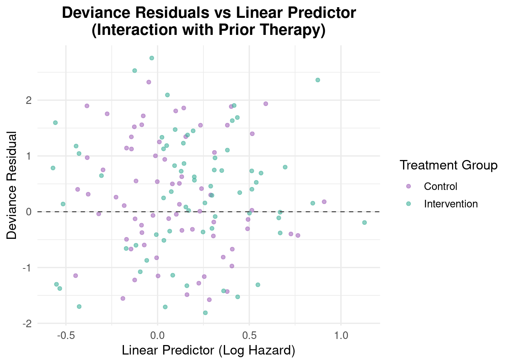
The plot of deviance residuals against the linear predictor for the interaction model reveals no strong patterns or obvious deviations from randomness. Residuals are symmetrically scattered around the zero line, with similar vertical spread across the range of the linear predictor. This suggests that:
Model Fit Appears Reasonable: There is no clear evidence of systematic bias, such as curvature, funneling, or clustering that might imply model misspecification, omitted variables, or heteroscedasticity.
Symmetry Around Zero: The relatively balanced distribution of residuals above and below the zero line supports the assumption that the model is neither consistently under- nor over-estimating the risk.
No Extreme Outliers: While a few points have larger residuals, there are no values that fall far outside the typical range (±3), indicating a lack of highly influential or poorly fit observations.
Group Comparison: The intervention and control groups appear similarly distributed across the range of linear predictors, lending further support to the appropriateness of the model specification including the interaction term.
Summary:
The deviance residual plot offers no strong evidence of model misfit and supports the adequacy of the Cox model including the interaction between treatment and prior therapy. Residuals appear randomly and symmetrically distributed, suggesting that the model captures the underlying structure of the data well, at least within the limitations of this dataset.
6 Model Comparison: Interaction vs Non-Interaction
Two extended models were fit to explore potential effect modification: one including an interaction between treatment and age (via natural splines), and another between treatment and prior therapy. While the treatment × age model showed a statistically significant interaction term, the overall model-level tests remained marginal (Wald p = 0.05, Score p = 0.03), with no compelling evidence of meaningful improvement in predictive performance. The treatment × prior therapy interaction suggested a potential moderating effect, but this did not reach statistical significance (p = 0.135), and proportional hazards assumptions were borderline (p = 0.054).
When comparing these interaction models to the simpler additive model (trt + prior + spline-transformed age), neither interaction offered substantial improvement in model fit or interpretability. Residual diagnostics also did not reveal meaningful deviations. As such, the additive model remains a strong candidate for final interpretation.